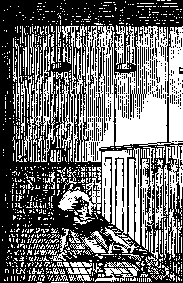

Fig. 118. Aspen.
| << PREVIOUS | FIRST | NEXT >> |
| | 01 | 02 | 03 | 04 | 05 | 06 | 07 | 08 | 09 | | ||
During the last half century a great change has taken place in the treatment of disease. Medicine has advanced with rapid strides, from the narrow limits of mere empiricism, to the broader realm of rationalism, until to day it comprehends all the elements of an art and a science. Scientific researches and investigations have added many valuable truths to the general fund of medical learning, but much more has been effected by observation and empirical discovery. It is of little or no interest to the invalid to know whether the prescribed remedy is organic or inorganic, simple, compound, or complex. In his anxiety and distress of body, he seeks solely for relief, without regard to the character of the remedial agents employed. But this indifference on the part of the patient does not obviate the necessity for a thorough, scientific education on the part of the practitioner. Notwithstanding all the laws enacted to raise the standard of medicine, and thus protect the public from quackery, there yet exists a disposition among many to cling to all that savors of the miraculous, or supernatural. To insure the future advancement of the healing art, physicians must instruct mankind in Physiology, Hygiene, and Medicine. When the people understand the nature of diseases, their causes, methods of prevention and cure, they will not be easily deceived, and practitioners will be obliged to qualify themselves better for their labors. The practice of medicine is every year becoming [pg 293]more successful. New and improved methods of treating disease are being discovered and developed, and the conscientious physician will avail himself of all the means, by a knowledge of which he may benefit his fellow-men. The medical profession is divided into three principal schools, or sects.
This is the oldest existing branch of the profession. To it is due the credit of collecting and arranging the facts and discoveries which form the foundation of the healing art. It has done, and is doing, much to place the science of medicine on a firm basis. To the text-books of this school, every student who would qualify himself for medical practice must resort, to gain that knowledge upon which depends his future success. The early practice of this branch of the profession was necessarily crude and empirical. Conservative in its character, it has ever been slow to recognize new theories and methods of practice, and has failed to adopt them until they have been incontrovertibly established. This conservatism was manifested in the opposition to Harvey when he propounded the theory of the circulation of the blood, and to Jenner when he discovered and demonstrated the beneficial effects of vaccination. Thus has it ever defended its established opinions against innovation; yet out of this very conservatism has grown much real good, for, although it has wasted no time or energy in the investigation of theories, yet it has accepted them when established. In this manner it has added to its fund of knowledge only those truths which are of real and intrinsic value.
The history of medicine may be divided into three eras. In the first, the practice of medicine was merely empiricism. Ignorant priests or astrologers administered drugs, concerning the properties of which they had no knowledge, to appease the wrath of mythological deities. In the second or heroic era, the lancet, mercury, antimony, opium, and the blister were employed indiscriminately as the sine qua non of medical practice. The present, with all its scientific knowledge of the human structure and functions, and its vast resources for remedying disease may be aptly termed the liberal era of medicine. The allopathic [pg 294]differs from the other schools, mainly in the application of remedies. In its ranks are found men, indefatigable in their labors, delving deep into the mysteries of nature, and who, for their scientific attainments and humane principles are justly considered ornaments to society and to their profession.
Although this school is of comparatively recent origin, yet it has gained a powerful hold upon the public favor, and numbers among its patrons very many intelligent citizens. This fact alone would seem to indicate that it possesses some merit. The homeopathic differs from the allopathic school principally in its "law of cure," which, according to Hahnemann, its founder, was the doctrine of "similia similibus curantur" or "like cures like." Its method of treatment is founded upon the assumption that if a drug be given to a healthy person, symptoms will occur which, if transpiring in disease, would be mitigated by the same drug. While it may be exceedingly difficult for a member of another school to accept this doctrine and comprehend the method founded upon it, yet no one can deny that it contains some elements of truth.
Imbued with the spirit of progress, many of its most intelligent and successful practitioners have resorted to the use of appreciable quantities of medicine. This school associates hydropathy with its practice, and usually inculcates rigid dietetic and hygienic regulations. Many homoeopathic remedies are thoroughly triturated with sugar of milk, which renders them more palatable and efficacious. Whether we attribute their cures to the infinitesimal doses which many homoeopathists employ, to their "law of cure," to good nursing, or to the power of nature, it is nevertheless true that their practice is measurably successful. No doubt the homoeopathic practice has modified that of the other schools, by proving that diseases may be alleviated by smaller quantities of medicine than were formerly employed.
This school, founded by Wooster Beach, instituted the most strenuous opposition to the employment of mercury, antimony, the blister, and the lancet. The members of this new school [pg 295]proclaimed that the action of heroic and noxious medicines was opposed to the operation of the vital forces, and proposed to substitute in their place safer and more efficacious agents, derived exclusively from the vegetable kingdom. The eclectics have investigated the properties of indigenous plants and have discovered many valuable remedies, which a kind and bounteous nature has so generously supplied for the healing of her children. Marked success attended the employment of these agents. In 1852, a committee on "Indigenous Medical Botany," appointed by the "American Medical Association," acknowledged that the practitioners of the regular school had been extremely ignorant of the medical virtues of plants, even of those of their own neighborhoods. The employment of podophyllin and leptandrin as substitutes for mercurials has been so successful that they are now used by practitioners of all schools. Although claiming to have been founded upon liberal principles, it may be questioned whether its adherents have not been quite as exclusive and dogmatic as those whom they have opposed. It cannot be denied, however, that the eclectics have added many important remedies to the Materia Medica. Their writings are important and useful contributions to the physician's library.
After this brief review of the various medical sects, the reader may be curious to learn to what sect the physicians of the Invalids' Hotel and Surgical Institute belong. Among them are to be found graduates from the colleges of all the different schools. They are not restricted by the tenets of any one sect, but claim the right and privilege, nay, consider it a duty, to select from all, such remedies as careful investigation, scientific research, and an extensive experience, have proved valuable. They resort to any and every agent which has been proved efficacious, whether it be vegetable or mineral.
And here arises a distinction between sanative remedial agents and those which are noxious. Many practitioners deplore the use of poisons, and advocate innocuous medicines which produce only curative results. We agree with them in one proposition, namely, that improper medicines not only poison, [pg 296]but frequently utterly destroy the health and body of the patient. Every physician should keep steadily in view the final effects, as well as present relief, and never employ any agent without regard to its ulterior consequences. However, an agent which is noxious in health, may prove a valuable remedy in disease. When morbid changes have taken place in the blood and tissues, when a general diseased condition of the bodily organs has occurred, then an agent, which is poisonous in health, may prove curative. For instance it is admitted that alcohol is a poison; that it prevents healthful assimilation, solidifies pepsin, begets a morbid appetite; that it produces intoxication, and that its habitual use destroys the body. It is, therefore, neither a hygienic nor a sanative agent, but strictly a noxious one; yet, its very distinct antiseptic properties render it valuable for remedial purposes, since these qualities promptly arrest that fatal form of decomposition of the animal fluids which is occasioned by snake-venom, which produces its deadly effects in the same manner as a drop of yeast ferments the largest mash. Alcohol checks this poisonous and deadly process and neutralizes its effects. Thus, alcohol, although a noxious agent, possesses a special curative influence in a morbid state of the human system; but its general remedial effects do not entitle it to the rank of a hygienic agent. We believe that medicine is undergoing a gradual change from the darkness of the past, with its ignorance, superstition, and barbarism, to the light of a glorious future. At each successive step in the path of progress, medicine approaches one degree nearer the realm of an exact science. The common object of the practitioners of all medical schools is the alleviation of human suffering. The only difference between the schools is in the remedies employed, the size of dose administered, and the results attained. These are insufficient grounds for bitter sectarianism. We are all fellow laborers in the same field. Before us lies a boundless expanse for exploration. There are new conditions of disease to be learned, new remedies to be discovered, and new properties of old ones to be examined.
We do not deplore the fact, that there are different schools in medicine, for this science has not reached perfection, and they tend to stimulate investigation. The remarks of Herbert [pg 297]Spencer on the "Multiplication of Schemes of Juvenile Culture," may be pertinently applied to the different schools in medicine with increased force. He says: "It is clear that dissent in education results in facilitating inquiry by the division in labor. Were we in possession of the true method, divergence from it would, of course, be prejudicial; but the true method having to be found, the efforts of numerous independent seekers carrying out their researches in different directions, constitute a better agency for finding it than any that could be devised. Each of them struck by some new thought which probably contains more or less of basis in facts—each of them zealous on behalf of his plan, fertile in expedients to test its correctness, and untiring in its efforts to make known its success—each of them merciless in its criticism on the rest—there cannot fail, by composition of forces, to be a gradual approximation of all towards the right course. Whatever portion of the normal method any one of them has discovered, must, by the constant exhibition of its results, force itself into adoption; whatever wrong practices he has joined with it must, by repeated experiment and failure, be exploded. And by this aggregation of truths and elimination of errors, there must eventually be developed a correct and complete body of doctrine. Of the three phases through which human opinion passes—the unanimity of the ignorant, the disagreement of the inquiring, and the unanimity of the wise—it is manifest that the second is the parent of the third."
We believe the time is coming when those maladies which are now considered fatal will be readily cured—when disease will be disarmed of its terrors. To be successful, a physician must be independent, free from all bigotry, having no narrow prejudice against his fellow-men, liberal, accepting new truths from whatever source they come, free from restrictions of societies, and an earnest laborer in the interests of the Great Physician.
[pg 298]It will be our aim, throughout this book, to prescribe such remedies as are within the easy reach of all, and which may be safely employed. Many of those of the vegetable class are indigenous to this country, and may be procured in their strength and purity, at the proper season, by those residing in the localities where they grow, while all others advised may be obtained at any good drug-store. We shall endeavor to recommend such as can be procured and prepared with the least trouble and expense to the patient, when it is believed that they will be equally as efficacious as more expensive medicines.
Having the invalid's best interests in view, it will often happen that we cannot prescribe better or cheaper remedies nor those which are more effective or easily obtained, than some of our standard preparations, which are sold by all druggists. We are aware that there is a popular, and not altogether unfounded prejudice against "patent medicines," owing to the small amount of merit which many of them possess. The term "Patent Medicine" does not apply to Dr. Pierce's remedies, as no patent has ever been asked or obtained for them, nor have they been urged upon the public as "cure alls." They are simply favorite prescriptions, which, in a very extensive practice, have proved their superior remedial virtues in the cure of the diseases for which they are recommended.
From the time of Hippocrates down to the present day, [pg 299]physicians have classified diseases according to their causes, character or symptoms. It has been proved that diseases apparently different may often be cured by the same remedy. The reason for this singular fact is obvious. A single remedy may possess a variety of properties. Quinine, among other properties has a tonic which suggests its use in cases of debility; an antiperiodic, which renders it efficient in ague; and an anti-febrile property, which renders it efficacious in cases of fever. The result produced varies with the quantity given, the time of its administration, and the circumstances under which it is employed. Every practicing physician has his favorite remedies, which he oftenest recommends or uses, because he has the greatest confidence in their virtues. The patient does not know their composition. Even prescriptions are usually written in a language unintelligible to anybody but the druggist. As much secrecy is employed as in the preparation of proprietary medicines. Does the fact that an article is prepared by a process known only to the manufacturer render that article less valuable? How many physicians know the elementary composition of the remedies which they employ, some of which never have been analyzed? Few practitioners know how morphine, quinine, podophyllin, leptandrin, pepsin, or chloroform, are made, or how nauseous drugs are transformed into palatable elixirs; yet they do not hesitate to employ them. Is it not inconsistent to use a prescription the composition of which is unknown to us, and discard another preparation simply because it is accompanied by a printed statement of its properties with directions for its use?
Various journals in this country, have at different times published absurd formulæ purporting to be receipts for the preparation of "Dr. Sage's Catarrh Remedy" and Dr. Pierce's standard medicines, which, in most instances, have not contained a single ingredient which enters into the composition of these celebrated remedies.
In the manufacture of any pharmaceutical preparation, two conditions are essential to its perfection, viz: purity and strength of the materials, and appropriate machinery. The first is insured, by purchasing the materials in large quantities, whereby the exercise of greater care in selecting the ingredients can be [pg 300]afforded; and the second can only be accomplished where the business is extensive enough to warrant a large outlay of capital in procuring proper chemical apparatus. These facts apply with especial force to the manufacture of our medicines, their quality having been vastly improved since the demand has become so great as to require their manufacture in very large quantities. Some persons, while admitting that our medicines are good pharmaceutical compounds, object to them on the ground that they are too often used with insufficient judgment. We propose to obviate that difficulty by enlightening the people as to the structure and functions of their bodies, the causes, character, and symptoms of disease, and by indicating the proper and judicious employment of our medicines, together with such auxiliary treatment as may be necessary. Such is one of the designs of this volume.
It is generally conceded that the action of a remedy upon the human system depends upon properties peculiar to it. The effects produced suggest the naming of these qualities, which have been scientifically classified. We shall name the diseases from their characteristic symptoms, and then, without commenting upon all the properties of a remedy, recommend its employment. Our reference to the qualities of any remedy, when we do make a particular allusion to them, we shall endeavor to make as easy and familiar as possible.
Dose. All persons are not equally susceptible to the influence of medicines. As a rule, women require smaller doses than men, and children less than women. Infants are very susceptible to the effects of anodynes, even out of all relative proportion to other kinds of medicines. The circumstances and conditions of the system increase or diminish the effects of medicine, so that an aperient at one time may act as a cathartic at another, and a dose that will simply prove to be an anodyne when the patient is suffering great pain will act as a narcotic when he is not. This explains why the same dose often affects individuals differently. The following table is given to indicate the size of the dose, and is graduated to the age.
[pg 301]| YEARS | DOSE |
| 21 | full |
| 15 | 2-3 |
| 12 | 1-2 |
| 8 | 1-3 |
| 6 | 1-4 |
| 4 | 1-6 |
| 2 | 1-8 |
| 1 | 1-12 |
| ½ | 1-20 to 1-30 |
The doses mentioned in the following pages are those for adults, except when otherwise specified.
The Preparation of Medicines. The remedies which we shall mention for domestic use are mostly vegetable. Infusions and decoctions of these will often be advised on account of the fact that they are more available than the tinctures, fluid extracts, and concentrated principles, which we prefer, and almost invariably employ in our practice. Most of these medical extracts are prepared in our chemical laboratory under the supervision of a careful and skilled pharmaceutist. No one, we presume, would expect, with only a dish of hot water and a stew-kettle, to equal in pharmaceutical skill the learned chemist with all his ingeniously devised and costly apparatus for extracting the active, remedial principles from medicinal plants. Yet infusions and decoctions are not without their value; and from the inferior quality of many of the fluid extracts and other pharmaceutical preparations in the market, it may be questioned whether the former are not frequently as valuable as the latter. So unreliable are a majority of the fluid extracts, tinctures, and concentrated, active principles found in the drug-stores, that we long since found it necessary to have prepared in our laboratory, most of those which we employ. To the reliability of the preparations which we secure in this way we largely attribute our great success in the treatment of disease. Tinctures and fluid extracts are often prepared from old and worthless roots, barks, and herbs which have wholly lost their medicinal properties. Yet they are sold at just as high prices as those which are good. We manufacture our tinctures, fluid extracts, and concentrated, active principles from roots, barks, and herbs which are fresh, and selected with the greatest care. Many of the crude roots, barks, and herbs found in the market are inactive because they have been gathered at the wrong season. These, together with those that have been kept on hand so long as to have lost all medicinal value, are often sold [pg 302]in large quantities, and at reduced prices, to be manufactured into fluid extracts and tinctures. Of course, the preparations made from such materials are worthless. Whenever the dose of fluid extracts, tinctures, and concentrated, active principles, is mentioned in this chapter, the quantity advised is based upon our experience in the use of these preparations, as they are made in our laboratory, and the smallest quantity which will produce the desired effect is always given. When using most of the preparations found in the drug-stores, the doses have to be somewhat increased, and even then they will not always produce the desired effect, for reasons already given.
The List of Medicines which we shall introduce in this chapter will be quite limited, as we cannot hope, by making it extensive, that the non-professional reader would be able to prescribe with good judgment any other than the simpler remedies. Hence, we prefer, since we have not space in this volume to waste, to mention only a few of the most common remedies under each head or classification.
Tinctures. Very uniform and reliable tinctures may be made of most indigenous plants, by procuring the part to be employed, at the proper season, while it is green and fresh, bruising it well, and covering it with good strong whiskey, or with alcohol diluted with one part of water to three of alcohol, corking tightly, and letting it stand about fourteen days, when the tincture may be filtered or poured off from the drugs, and will be ready for use. Prepared in this imperfect manner, they rill be found to be much more reliable than any of the fluid extracts found in the drug-stores. An excess of the crude drug should be used in preparing the tincture to insure a perfect saturation of the alcohol with its active principles.
Homoeopathic Tinctures. The tinctures prepared by several of the German and French pharmaceutists, and called by them "Mother Tinctures," to distinguish them from the dilutions made therefrom, we have found to be very reliable, so much superior to any similar preparations made in this country that we purchase from them all we use of Pulsatilla, Staphisagria, Drosera and several others. They are prepared with great care from the green, crude material, and although high in price, when compared with other tinctures, yet the greater [pg 303]certainty of action which we secure in our prescriptions by their employment more than repays for the expense and trouble in procuring them, for of what account is expense to the true physician when life may depend upon the virtue of the agent he employs?
Infusions. These are generally made by adding one-half ounce of the crude medicine to a pint of water, which should be closely covered, kept warm, and used as directed. Flowers, leaves, barks, and roots become impaired by age, and it is necessary to increase or diminish the dose according to the strength of the article employed.
Decoctions. The difference between a decoction and an infusion is, that the plant or substance is boiled in the production of the former, in order to obtain its soluble, medicinal qualities. Cover the vessel containing the ingredients, thus confining the vapor, and shutting out the atmospheric air which sometimes impairs the active principles and their medicinal qualities. The ordinary mode of preparing a decoction is to use one ounce of the plant, root, bark, flower, or substance to a pint of water. The dose internally varies from a tablespoonful to one ounce.
Alteratives are a class of medicines which in some inexplicable manner, gradually change certain morbid actions of the system, and establish a healthy condition instead. They stimulate the vital processes to renewed activity, and arouse the excretory organs to remove matter which ought to be eliminated. They facilitate the action of the secretory glands, tone them up, and give a new impulse to their operations, so that they can more expeditiously rid the system of worn-out and effete materials. In this way they alter, correct, and purify the fluids, tone up the organs, and re-establish their healthy functions. Alteratives may possess tonic, laxative, stimulant, or diuretic properties all combined in one agent. Or we may combine several alteratives, each having only one of these properties in one remedy. We propose to enumerate only a few alteratives, and give the doses which are usually prescribed; the list which we employ in our practice is very extensive, but it cannot be made available for domestic use.
[pg 304]Mandrake (Podophyllum Peltatum), also called May-apple, is a most valuable alterative. The root is the part used. Dose—Of decoction, one to two teaspoonfuls; of tincture, six to eight drops; of fluid extract, three to five drops; of its active principle, Podophyllin, one-twelfth to one-eighth of a grain.
Poke (Phytolacca Decandra), also called Skoke, Garget, or Pigeon-berry, is a valuable alterative. The root is the part used. Dose—Of decoction, one to three teaspoonfuls; of fluid extract, three to ten drops; of concentrated principle, Phytolaccin, one-fourth to one grain.
Yellow Dock (Rumex Crispus), The part used is the root. Dose—Of the infusion, one to three fluid ounces three times daily; of fluid extract, ten to thirty drops; of tincture twenty to forty drops.
Tag Alder (Alnus Rubra), This is otherwise known as the Smooth, Common, or Swamp Alder. The bark is the part used. It is excellent in scrofula, syphilis, cutaneous and all blood diseases. Dose—Of decoction, one or two tablespoonfuls [pg 305]from three to five times daily; of tincture, one or two teaspoonfuls; of fluid extract, one-half to one teaspoonful; of concentrated principle, Alnuin, one-half to one grain.
Black Cohosh (Macrotys or Cimicifuga Racemosa) The part used is the root. Its other common names are Black Snake-root, or Squaw-root. Black Cohosh is an alterative stimulant, nervine, diaphoretic, tonic, and a cerebro-spinal stimulant. It is a useful remedy. Dose—Of decoction, one-fourth to [pg 306]one ounce; of tincture, ten to fifteen drops; of fluid extract, five to ten drops; of the concentrated principle, Macrotin, one-eighth to one-half grain.
Blood-root (Sanguinaria Canadensis), is also known as Red Puccoon. The part used is the root. In minute doses Blood-root is a valuable alterative, acting upon the biliary secretion and improving the circulation and digestion. Dose—Of powdered root, one-fourth to one-half grain; of tincture, one [pg 307]to two drops; of the fluid extract, one-half to one drop. When given in a fluid form it should be well diluted.
Burdock (Arctium Lappa). The root is the part used. Burdock is a valuable alterative in diseases of the blood. Dose—Of tincture, from one teaspoonful to a tablespoonful twenty minutes before meals; of fluid extract, one to two teaspoonfuls.
Blue Flag (Iris Versicolor). The part used is the root. Dose—Of the tincture, five to ten drops; of fluid extract, three to ten drops; of concentrated principle, Iridin, one-half to two grains.
Sweet Elder (Sambucus Canadensis). Sweet Elder-flowers are a valuable alterative, diuretic, mucous and glandular stimulant, excellent in eruptive, cutaneous, and scrofulous diseases of children. An infusion, fluid extract, or syrup, may be used in connection with the "Golden Medical Discovery." Both will be found valuable for cleansing the blood and stimulating the functions to a healthy condition. Dose—Of the infusion of the flowers, from one-half to one ounce, if freely taken, will operate as a laxative; of fluid extract, one-fourth to one-half teaspoonful. The flowers, or inner bark of the root, simmered in fresh butter, make a good ointment for most cutaneous affections.
Iodine. This agent, in the several forms of Iodide of Potassium, Iodide of Ammonium, Iodide of Iron, and Iodide of Lime, is largely employed by physicians, and often with most happy results. But for domestic use we cannot advise its employment, as it is liable to injure the invalid, when its action is carried too far, which is apt to be the case, when not administered under the supervision of a competent physician.
Mercury. The various preparations of mercury have a profound, alterative effect upon the system. When taken for some time, they change the quality and composition of the blood; cause a diminution in the number of red blood-corpuscles, and an increase in the various effete materials. In the vast majority of cases we prefer the vegetable alteratives, but in rare instances they exert a beneficial influence, in small doses. None of the preparations of mercury should be taken internally without the advice of a skillful physician, therefore, we shall not give their doses.
[pg 308]The efficacy of this class of remedies can be greatly increased by properly combining several of them into one compound.
This requires a knowledge of Pharmaceutical Chemistry; i.e., the preparation of compounds founded on the chemical relation and action of their several remedial, active principles. Many practitioners make combinations of remedies which neutralize each other's influence, instead of extending their efficacy and curative power.
Dr. Pierce's "Golden Medical Discovery," or Alterative Extract. This compound is a highly nutritive and tonic preparation, combining the remedial properties of the best vegetable alteratives at present known to the medical profession. In perfecting this alterative compound, and likewise other standard preparations of medicine, we have made an outlay of many thousand dollars for chemical apparatus, and special machinery by the aid of which these remedies have been brought to their present perfection. Great pains are taken to obtain the materials at the right season of the year, properly cured so that none of their remedial qualities may be impaired. We, therefore, can with great confidence recommend Dr. Pierce's "Golden Medical Discovery" as one of the best preparations of the alterative class. Like all others of this type, its action is insensible, producing gradual changes, arousing the excretory glands to remove morbid materials, and at the same time toning the secretory organs. The manufacture of this compound is under the special supervision of a competent chemist and pharmaceutist, and it is now put up in bottles wrapped with full directions for its use. We can confidently recommend this compound whenever an alterative is required to cleanse the blood, tone the system, increase its nutrition, and establish a healthy condition. For these reasons we shall often advise its employment.
Dr. Pierce's Pleasant Purgative Pellets. These pellets combine the pure, concentrated, active principles of several vegetable alteratives, and the result is, that within the small compass of a few grains he has most happily blended and chemically condensed these properties so that their action upon [pg 309]the animal economy is sanative and universal. They awaken the latent powers, quicken the tardy functions, check morbid deposits, dissolve hard concretions, remove obstructions, promote depuration, harmonize and restore the functions, equalize the circulation, and encourage the action of the nervous system. They stimulate the glands, increase the peristaltic movement of the intestines, tone the nutritive processes, while aiding in evacuating the bowels. All this they accomplish without corroding the tissues or vitiating the fluids. Their assistance is genial, helping the system to expel worn out materials, which would become noxious if retained. Having expended their remedial powers upon the various functions of the body, they are themselves expelled along with other waste matter, leaving behind them no traces of irritation. This cannot be said of mercurials, or of other harsh, mineral alteratives. These Pellets may be safely employed when the system is feeble, frail, and delicate, by giving them in less quantities. Dose—As an alterative, only one or two Pellets should be taken daily.
Alkalies. These constitute an important list of remedial agents, their administration being frequently indicated. The employment of other medicines frequently should be preceded by the administration of an agent of this class, to neutralize excessive acidity in the stomach and bowels. Unless this be done, many medicines will fail to produce their specific effects.
Sulphite of Soda (Sodæ Sulphis). This salt, as well as the Hyposulphite of Soda, is not only generally preferable for administration on account of its unirritating character and the smallness of the dose required, but also because it is a valuable antiseptic agent. The Sulphite should not be confounded with the Sulphate of Soda (Glauber's Salt). Dose—This is from three to ten grains.
Saleratus (Potassoe Bicarbonas). This is a favorite domestic antacid. Dose—Five to fifteen grains is the amount.
As alkalies are important and often indicated as remedial agents, acids, so their re-agents, acids, are also frequently [pg 310]necessary to meet opposite conditions of the fluids of the system.
Hydrochloric or Muriatic Acid. This agent may be administered in doses of from five to ten drops, largely diluted in water or gruel.
Aromatic Sulphuric Acid, or Elixir of Vitriol, is the most agreeable form of Sulphuric Acid for administration, and may be given in doses of from five to fifteen drops, largely diluted with water.
In taking acids, they should be sucked through a straw, and not allowed to come in contact with the teeth, as otherwise the latter organs will be injured by their effects; or should the acid come in contact with the teeth, the mouth should be immediately rinsed with a solution of saleratus or soda, to neutralize the acid.
Anodynes are those medicines which relieve pain by blunting the sensibility of the nerves, or of the brain, so that it does not appreciate the morbid sensation. An anodyne may be a stimulant in one dose, and a narcotic in a larger one. The properties of different anodyne agents vary, consequently they produce unlike effects. The size of the dose required, differs according to circumstances and condition. An adult, suffering acute pain, requires a much larger dose to produce an anodyne effect than one who is a chronic sufferer. An individual accustomed to the use of anodynes, requires a much larger dose to procure relief than one who is not. Doses may be repeated, until their characteristic effects are produced, after an interval of thirty or forty minutes. When the stomach is very sensitive and will not tolerate their internal administration, one-sixth of a grain of Morphia can be inserted beneath the skin, by means of a hypodermic syringe. Relief is more quickly experienced, and the anodyne effect is much more lasting than when taken into the stomach.
Opium (Papaver Somniferum). Opium is a stimulant, anodyne, or narcotic, according to the size of the dose administered. Dose—Of the dry powder, one-fourth to one grain; of tincture (Laudanum), five to fifteen drops; of camphorated tincture (Paregoric), one-half to one teaspoonful; of [pg 311]Morphine, one-eighth to one-fourth grain; of Dover's Powder three to five grains.
Hyoscyamus (Hyoscyamus Niger), commonly known as Henbane. The herb is used. It is a powerful narcotic, and unlike Opium, does not constipate the bowels, but possesses a laxative tendency. Therefore, it may be employed as an anodyne for allaying pain, calming the mind, inducing sleep and arresting spasms, when opiates are inadmissible. Dose—Of alcoholic extract, one-half to two grains; of fluid extract, five to ten drops; of the concentrated principle, Hyoscyamin, one-twelfth to one-fourth of a grain.
Poison Hemlock (Conium Maculatum). The leaves are the parts used. Poison Parsley, as it is sometimes called, is an anodyne, narcotic, and an excellent alterative. Dose—Of fluid [pg 312]extract, two to six drops; of solid extract, one-fourth to one-half grain.
Belladonna (Atropa Belladonna) or Deadly Nightshade. The herb or leaves are a valuable agent. In overdoses, it is an energetic, narcotic poison. In medicinal doses it is anodyne, antispasmodic, diaphoretic, and diuretic. It is excellent in neuralgia, epilepsy, mania, amaurosis, whooping-cough, stricture, rigidity of the os uteri, and is supposed by some to be a prophylactic or preventive of Scarlet Fever. Its influence upon the nerve centers is remarkable. It relaxes the blood vessels on the surface of the body and induces capillary congestion, redness of the eye, scarlet appearance of the face, tongue, and body. Dose—Of fluid extract, one-half to one drop; of tincture, one to two drops; of concentrated principle, Atropin, one-thirtieth to one-sixteenth of a grain; of the Alkaloid, Atropia, one-sixtieth of a grain. Even the most skillful chemists are very cautious in compounding these latter active principles, and the danger of an overdose is great.
Camphor. This drug is an anodyne, stimulant, and diaphoretic, and, in large doses, a narcotic and an irritant. It is an excellent stimulant for liniments. Dose—Of the powder, one to five grains; of the tincture, ten to twenty drops, given in simple syrup.
Hops (Humulus Lupulus). This is an excellent remedy in wakefulness, and may be used when opium is contra-indicated. A bag of the leaves, moistened with whiskey and placed as a pillow under the head, acts as an anodyne. Dose—Of the infusion of the leaves, from one to four ounces; of the fluid extract, one-fourth to three-fourths of a teaspoonful; of the concentrated principle, Humulin, one to three grains.
Dr. Pierce's Compound Extract of Smart-weed. This anodyne compound is made by uniting several of the most valuable agents of this class, and its medicinal qualities are rendered still more efficacious by the addition of certain stimulating articles. It is free from narcotic properties which are liable to produce deleterious results, and has been found to be not only harmless in its action, but very genial and effectual withal, and most reliable as a stimulant and diaphoretic remedy.
[pg 313]Anthelmintic means "against a worm," and is a term employed to designate those medicines which destroy or expel worms. It means the same as Vermifuge. Little is understood concerning the origin of worms. There are five distinct varieties described by authors as being more common than others. There is the long worm, the short, or pin-worm, the thread-worm, the tape-worm, and the broad tape-worm peculiar to some countries of Europe. Irritation of the alimentary canal, from whatever cause usually produces an abundant secretion of mucus, which is thought to be a condition favorable for their production. Therefore, those medicines which remove the cause of this irritation tend to diminish the number, if not to entirely destroy the worms. Some medicines kill the worms, others expel them alive. The remedies which successfully remove one kind of worm, have little effect upon another, and to meet these different conditions, we have a variety of worm-destroying medicines. The pin-worm, inhabits the rectum, and may be destroyed by injecting into it a strong solution of salt, or decoction of aloes, and when it is allowed to pass away, the rectum should be anointed with vaseline, butter, or lard. The eggs of this worm are developed around the orifice of the large intestine, and when this latter precaution is not practiced every time there is a passage from the bowels, they will multiply as rapidly as they can be destroyed. Generally, vermifuge remedies should be taken when the stomach is empty, and should be followed by the administration of a cathartic in two hours after the last dose is administered.
Santonin. This is decidedly the most reliable anthelmintic known to the medical profession. It is deservedly a popular remedy for worms, and when combined with Podophyllin, is very efficacious in removing the pin-worm. Dose—For an adult, two to three grains of the powdered Santonin, repeated every three hours until four or five doses are taken, when it should be followed by a cathartic.
Sage (Salvia Officinalis). Sage is a common and excellent domestic remedy for worms. Make an infusion of Sage and Senna leaves, and drink freely until it acts as a cathartic.
[pg 314]Pink-root (Spigelia Marilandica). Pink-root is one of the most active and certain anthelmintics for children. It is indigenous to the United States. When taken in too large quantities, it is apt to purge, give rise to vertigo, dimness of vision, and even to convulsions; therefore, it should be [pg 315]combined with some cathartic. Dose—Of the infusion, one ounce at night, followed by physic in the morning.
Common Salt (Chloride of Sodium). Common table salt is an anthelmintic, and may be used in an emergency. Salt water is a very common domestic remedy for worms. Dose—In solution, one-quarter to one-half teaspoonful.
Balmony (Chelone Glabra). This is also tonic and anthelmintic, and is valuable in debility, dyspepsia, jaundice, and hepatic affections. It also is known as Snake-head. Dose—Of the infusion, one to two ounces; of the concentrated principle, Chelonin, from half to one grain.
Male Fern (Aspidium Filix Mas). Male Fern is the anthelmintic which is considered especially effectual in removing the tape-worm. Dose—Of the powder, one to two drachms, given morning and evening in syrup, followed by a brisk cathartic. The dose of the tincture of the buds in ether is from eight to thirty drops.
Fig. 118.
Aspen.
Poplar (Populus Tremuloides). The White or Aspen Poplar is a common tree, and contains active principles termed Populin and Salicin, both of which are tonic. An infusion of the bark is a remedy for worms. Dose—Of the tea made from the bark, one to four ounces; of Populin, from one-half to two grains.
It is well understood that malarial diseases are characterized by a periodicity which indicates their nature. Antiperiodics prevent the recurrence of the periodic manifestations, and hence their name.
Quinine (Sulphate of Quinia). Quinine is a tonic, febrifuge, and antiperiodic. It should generally be administered during the intervals between the febrile paroxysms. It is beneficial also in all diseases accompanied by debility. The dose varies from one to six grains according to indications. Frequently it is given in much [pg 316]larger quantities, but we cannot advise such for domestic use.
Prussian Blue (Ferri Ferrocyanidum). Ferrocyanide of Iron is an excellent tonic and antiperiodic remedy, and often is combined with quinine. Dose—From two to five grains.
Boneset (Eupatorium Perfoliatum), or Thoroughwort. This is tonic, diaphoretic, aperient, and possesses some antiperiodic properties; the warm infusion is emetic. Dose—Of the infusion, one to four ounces; of the fluid extract, from half to one teaspoonful; of the active principle, Eupatorin, one to three grains.
The "Golden Medical Discovery" has gained an enviable reputation in malarial districts for the cure of ague. From observing its action in the cure of this and other miasmatic diseases, and knowing its composition, we are thoroughly [pg 317]satisfied that it contains chemical properties which neutralize and destroy the miasmatic or ague poison which is in the system, and, at the same time, produces a rapid excretion of the neutralized poisons. One strong proof of this is found in the fact that persons who are cured with it are not so liable to relapse as those in whom the chills are broken with Quinine or other agents. No bad effects are experienced after an attack of ague which has been cured with the "Golden Medical Discovery." This cannot be said of Quinine, Peruvian Bark, Arsenic, and Mercurials, which comprise nearly the whole list of remedies usually resorted to by physicians for arresting ague. The "Golden Medical Discovery" not only has the merit of being a certain antidote for miasmatic diseases, but is pleasant to the taste, a matter of no small importance, especially when administered to children. To break the chills, this medicine should be taken in doses of four teaspoonfuls three times a day, and if this treatment pursued for three days, does not entirely arrest the chills, these doses may be repeated in alternation with five-grain doses of quinine for the three succeeding days. But in no case should more than this amount of the "Golden Medical Discovery" be given.
Antiseptics prevent, while disinfectants arrest putrefaction. Oxygen is a natural disinfectant, but a powerful inciter of change. Although this element is the cause of animal and vegetable decay, yet oxidation is the grand process by which the earth, air, and sea are purified. A few substances are both antiseptic and disinfectant. Heat up to a temperature of 140° Fahr. promotes putrescence, but above that point, is a drier or disorganizer, and destroys the source of infection.
Yeast (Cerevisiæ Fermentum). Yeast is an antiseptic, and is effective in all diseases in which there is threatened putridity. Used externally, it is often combined with elm bark and charcoal, and applied to ulcers, in which there is a tendency to gangrene. Dose—One tablespoonful in wine or porter, once in two or three hours.
Creasote. This is a powerful antiseptic. It is used in a [pg 318]solution of glycerine, oil, water, or syrup. Dose—One to two drops, largely diluted.
Carbolic Acid is a crystalline substance resembling creasote in its properties. It is an antiseptic, and is used both internally and externally. Dose—One-fourth to one-half drop of the melted crystals, very largely diluted. Externally, in solution, one to five grains of the crystals to one ounce of the solvent.
White Vitriol (Zinci Sulphas). White vitriol is a valuable disinfectant, as it will arrest mortification. In solution it is employed in ulcers and cancers and also as a gargle in putrid sore throat. Dose—One-half to two grains in a pill; in solution, one to ten grains in an ounce of water.
Permanganate of Potash (Potassoe Permanganas). This substance is an energetic deodorizer and disinfectant. A solution containing from one to twenty grains in an ounce of water is used as a lotion for foul ulcers. Dose—One-eighth to one-fourth of a grain.
Wild Indigo (Baptisia Tinctoria). The root is the part used. This plant possesses valuable antiseptic properties. It is an excellent lotion for ill-conditioned ulcers, malignant sore throat, nursing sore-mouth, syphilitic ophthalmia, etc. It is sometimes administered in scarlet and typhus fevers, and in all diseases in which there is a tendency to putrescence. Dose—Of the infusion, one-fourth to one-half ounce; of the fluid extract, from three to ten drops, and of the concentrated, active principle of the plant, Baptisin, from one to two grains.
Antispasmodics are a class of remedies which relieve cramps, convulsions, and spasms, and are closely allied to nervines. Indeed some authors class them together. The following are a few of the most important antispasmodics:
Assafetida (Assafetida Ferula). This is a powerful antispasmodic. It is employed in hysteria, hypochondria, convulsions, and spasms, when unaccompanied by inflammation. Dose—Of the gum or powder, from three to ten grains, usually administered in the form of a pill; of the tincture, from one-half to one teaspoonful.
[pg 319]Yellow Jessamine (Gelseminum Sempervirens). The root is the part used. This is a valuable remedy in various diseases when associated with restlessness and a determination of the blood to the brain; also in the neuralgia. Dose—Of the [pg 320]fluid extract, three to eight drops; of the concentrated principle, Gelsemin, one-fourth to one grain. The use of this drug by non-professional persons should be attended with great caution.
Valerian (Valeriana Officinalis). The root is the part used. Valerian is an effective remedy in cases of nervousness and restlessness. Dose—Of the infusion, (one-half ounce to a pint of water) one-half ounce; of the tincture, one-half to two tablespoonfuls; of the ammoniated tincture of valerian, from one-half to two teaspoonfuls in sweetened water or milk; of the valerianate of ammonia, one-half to three grains.
Yellow Lady's Slipper (Cypripedium Pubescens). The root is the part used. This is a useful remedy in hysteria, chorea, and all cases of irritability. Dose—Of the powder, fifteen to thirty grains; of the infusion, one ounce; of the fluid extract, fifteen to thirty drops; of the concentrated principle, Cypripedin, one-half to two grains.
Wild Yam (Dioscorea Villosa). The root is the part used. This is a powerful antispasmodic, and has been successfully used in bilious colic, nausea, and spasm of the bowels. Dose—Of the infusion (two ounces to a pint of water), one to two ounces; of the fluid extract, five to fifteen drops; of the concentrated principle, Dioscorein, one-half to one grain.
High Cranberry (Viburnum Opulus.) The bark is the part used. It is also known as Cramp Bark. This is a powerful antispasmodic, and is effective in relaxing spasms of all kinds. It is a valuable agent in threatened abortion. Dose—Of the infusion, one-half to one ounce; of the fluid extract, one-half to one teaspoonful; of the concentrated principle, Viburnin, one-half to two grains. These doses may be increased if necessary.
Astringents are medicines which condense and coagulate the tissues, thereby arresting discharges. When taken into the mouth, they produce the sensation known as puckering. They are used internally and locally. The term styptic is used as a synonym of astringent, but is generally employed to designate those astringents which arrest hemorrhage, or bleeding.
[pg 321]Logwood (Hoematoxylon Campechianum). Logwood is a mild astringent, well adapted to remedy the relaxed condition of the bowels after cholera infantum. Dose—Of powdered extract, five to ten grains; of the decoction, one ounce; of the fluid extract, fifteen to thirty drops.
Blackberry Root (Rubus Villosus). This astringent is a favorite, domestic remedy in affections of the bowels. Dose—Of the infusion (bruised root), one-half to one ounce, sweetened.
Witch-hazel (Hamamelis Virginica). The parts used are the leaves and bark. This is a most valuable astringent and exerts a specific action upon the nervous system. It arrests many forms of uterine hemorrhage with great promptness, is a valuable agent in the treatment of piles, and is useful in [pg 322]many forms of chronic throat and bronchial affections. Dose-Of the infusion, one-fourth to one-half ounce; of the fluid extract, eight to fifteen grains; of the concentrated principle, Hamamelin, one fourth to one grain.
Cranesbill (Geranium Maculatum). The root is used. This plant is also known as Crow-foot, and Spotted Geranium. It is a pleasant, but powerful astringent. Dose—Of the fluid [pg 323]extract, ten to thirty drops; of the concentrated principle, Geranin, one to two grains.
Hardhack (Spirea Tomentosa), Spirea, or Meadow Sweet. The stem and leaves are used. It is a tonic and an astringent, and is used in diarrhea and cholera-infantum. Dose—Of the infusion, one-half to one ounce; of the fluid extract, three to six drops.
Bugle-weed (Lycopus Virginicus). This is variously known as Water-hoarhound and Water-bugle. It is sedative and tonic, as well as astringent, and is employed in hemorrhages [pg 324]and in incipient phthisis. Dose—Of the infusion, one to two ounces; of the fluid extract, fifteen to twenty-five drops; of the concentrated principle, Lycopin, one-half to one grain.
Canada Fleabane (Erigeron Canadense). The leaves and flowers are used. This plant, sometimes known as Colt's-tail, Pride-weed, or Butter-weed, is astringent, and has been [pg 325]efficiently employed in uterine hemorrhages. Dose—Of the infusion (two ounces of the herb to one pint of water), one to two ounces; of the oil, five to ten drops on sugar, repeated at intervals of from one to four hours.
Catechu (Acacia Catechu). A tincture of this plant is a pure, powerful astringent, and is especially useful in chronic diarrhea, chronic catarrh, and chronic dysentery. Dose—Of the powder, five to twenty grains; of the tincture, one-half to two teaspoonfuls.
Tannin (Acidum, Tannicum). This acid has a wide range of application. It is used as an astringent. Dose—One to five grains.
Gallic Acid (Acidum Gallicum). This remedy is used chiefly in hemorrhages. Dose—Three to five grains. In severe hemorrhages, this quantity should be administered every half hour, until the bleeding is checked.
Carminatives are medicines which allay intestinal pain, arrest or prevent griping caused by cathartics and exert a general soothing effect. They are aromatic, and to a certain extent, stimulant.
Anise-seed (Pimpinella Anisum). Anise is a pleasant, aromatic carminative, and is used in flatulent colic. Dose—Of the powdered seed, ten to fifteen grains; of the infusion (a teaspoonful of seed to a gill of water), sweetened, may be given freely; of the oil, five to ten drops on sugar.
Fennel-seed (Anethum Foeniculum). This is one of our most grateful aromatics, and is sometimes employed to modify the action of senna and rhubarb. Dose—Same as that of anise-seed.
Ginger (Zingiber Officinale). The root is the part used. This is a grateful stimulant and carminative. Dose—Of the powder, ten to twenty grains; of the infusion, one teaspoonful in a gill of water; of the tincture, twenty to thirty drops; of the essence, ten to fifteen drops; of the syrup, one teaspoonful.
Wintergreen (Gaultheria Procumbens). The leaves are used. This plant possesses stimulant, aromatic, and astringent properties. The essence of Wintergreen is carminative, and is [pg 326]used in colics. Dose—Of the essence, one-half to one teaspoonful in sweetened water; of the oil, three to five drops on sugar.
Peppermint (Mentha Piperita). Peppermint is a powerful stimulant, carminative, and antispasmodic. It is used in the treatment of spasms, colic, and hysteria. Dose—The infusion may be used freely. The essence may be taken in doses of fifteen to thirty drops in sweetened warm water; of the oil, one to five drops on sugar.
Spearmint (Mentha Viridis). The carminative properties of spearmint are inferior to those of peppermint, and its chief employment is for its diuretic and febrifuge virtues. Dose—Same as that of peppermint.
Compound Extract of Smart-weed. Dr. Pierce's Extract of Smart-weed is a valuable carminative and aromatic stimulant, and has been employed with marked success in all diseases in which this class of remedies is required.
Cathartics, or Purgatives are medicines which act upon the bowels and increase the secretions and evacuations. In many parts of the country, these agents are known as purges, or physics. They have been variously divided and subdivided, usually with reference to the energy of their operations or the character of the evacuations produced.
Laxatives, or Aperients, are mild cathartics. Purgatives act with more energy and produce several discharges which are of a more liquid character and more copious than the former.
Drastics are those cathartics which produce numerous evacuations accompanied by more or less intestinal irritation.
Hydragogues are those purgatives which produce copious, watery discharges.
Cholagogues are those purgatives which act upon the liver, stimulating its functions. Cathartics constitute a class of remedies which are almost universally employed by families and physicians.
Jalap (Ipomoea Jalapa). The root is used. It is a drastic and a hydragogue cathartic. Formerly it was combined with equal parts of calomel. From this fact it received the name of "ten and ten." Dose—Of the powder, five to twenty grains; [pg 327]of the fluid extract, ten to fifteen drops; of the solid extract, two to four grains; of the concentrated principle, Jalapin, one-half to two grains.
Gamboge (Gambogia). The gum is used. Gamboge is a powerful drastic, hydragogue cathartic, which is apt to produce nausea and vomiting. It is employed in dropsy. It should never be given alone, but combined with milder cathartics. It accelerates their action while they moderate its violence. Dose—Of the powder, one-half to two grains. This substance combined with aloes and sometimes with scammony, constitutes the basis of the numerous varieties of large, cathartic pills found in the market.
Culver's-root. (Leptandra Virginica). The root is used. This plant, known under the various names of Culver's Physic, Black-root, Tall Speedwell, and Indian Physic, is a certain cholagogue, laxative, and cathartic. Dose—Of decoction, one to two fluid ounces; of fluid extract, ten to twenty drops; of tincture, twenty to thirty drops; of the concentrated, active principle, Leptandrin, which is but feebly cathartic, as a laxative, two to five grains.
Rhubarb (Rheum Palmatum). This is much used as a domestic remedy, and by the profession, for its laxative, tonic, and astringent effects. It is employed in bowel complaints. Dose—Of the powder, ten to thirty grains; of the tincture, one-half to two teaspoonfuls; of the fluid extract, ten to thirty drops; of the solid extract, three to five grains; of the syrup, and aromatic [pg 328]syrup, an excellent remedy for children, one-half to one teaspoonful.
Cascara Sagrada (Rhamnus Purshiana), is a very efficient remedy in chronic constipation. Dose—Of the fluid extract, from ten to twenty drops taken in a tablespoonful of water. The unpleasant taste may be disguised with the extract of liquorice.
Castor Oil (Oleum Ricini). Dose—From one to four teaspoonfuls. It may be disguised by rubbing it with an equal quantity of glycerine and adding one or two drops of oil of anise, cinnamon, or wintergreen.
Butternut (Juglans Cinerea). The bark is the part used. Butternut is a mild cathartic, which resembles rhubarb in its property of evacuating the bowels without irritating the alimentary canal. Dose—Of the extract, as a cathartic, five to ten grains; of the fluid extract, one-half to one teaspoonful; of the concentrated principle, Juglandin, one to three grains. As a laxative, one-half of these quantities is sufficient.
Aloes (Aloe). The gum is used. This cathartic acts upon the lower part of the bowels and sometimes causes piles; though some late authors claim that in small doses it is a valuable remedy for piles. Dose—In powder or pill, three to ten grains; as a laxative, one to three grains.
Epsom Salts (Magnesia Sulphas). Its common name is "Salts." Much used in domestic practice. Dose—One-fourth to one-half ounce.
Dr. Pierce's Pleasant Pellets, being entirely vegetable in their composition, operate without disturbance to the system, diet, or occupation. Put up in glass vials. Always fresh and reliable. As a laxative, alterative, or gently acting but searching cathartic, these little Pellets give the most perfect satisfaction. Sick Headache, Bilious Headache, Dizziness, Constipation, Indigestion, Bilious Attacks, and all derangements of the stomach and bowels, are promptly relieved and permanently cured by the use of Dr. Pierce's Pleasant Pellets. In explanation of the remedial power of these Pellets over so great a variety of diseases, it may truthfully be said that their action upon the system is universal, not a gland or tissue escaping their sanative influence.
[pg 329]Everybody, now and then, needs a gentle laxative to assist nature a little; or, a more searching and cleansing, yet gentle cathartic, to remove offending matter from the stomach and bowels and tone up and invigorate the liver and quicken its tardy action. Thereby the "Pleasant Pellets" cure biliousness, sick and bilious headache, costiveness, or constipation of the bowels, sour stomach, windy belchings, "heart-burn," pain and distress after eating, and kindred derangements of the liver, stomach and bowels.
Persons subject to any of these troubles should never be without a vial of the "Pleasant Pellets" at hand. In proof of their superior excellence it can be truthfully said that they are always adopted as a household remedy after the first trial.
The "Pleasant Pellets" are far more effective in arousing the liver to action than "blue pills," the old-fashioned compound cathartic pills, calomel or other mercurial preparations, and have the further merit of being purely vegetable in their composition and perfectly harmless in any condition of the system. Furthermore, no particular care is required while using them.
Being composed of the choicest, concentrated vegetable extracts, their cost of production is much more than that of most pills found in the market, yet from forty to forty-four of them are put up in each glass vial, as sold through druggists, and can be had at the price of the more ordinary and cheaper made pills. Once used, they are always in favor. Their secondary effect is to keep the bowels open and regular, not to further constipate, as is the case with other pills. Hence, their great popularity with sufferers from habitual constipation, piles and their attendant discomfort and manifold derangements.
For all laxative and cathartic purposes the "Pleasant Pellets" are infinitely superior to all "mineral waters," sediltz powders, "salts," castor oil, fruit syrups (so-called), laxative "teas," and the many other purgative compounds sold in various forms.
If people generally, would pay more attention to properly regulating the action of their bowels, they would have less frequent occasion to call for their doctor's services to subdue attacks of dangerous diseases. Hence it is of great importance to know what safe, harmless agent best serves the purpose of producing the desired action.
[pg 330]In all cases, the size of dose to be taken must be regulated somewhat by the known susceptibility of the individual to the action of laxative and cathartic medicines. Some persons' bowels are readily acted upon by small doses, while others require more. As a general rule, the smaller doses which we recommend, are quite sufficient, and produce the best results if persisted in for a reasonable length of time.
FOR A GENTLE APERIENT, OR LAXATIVE, take one or not more than two and preferably in the morning, on an empty stomach.
FOR A GENTLE CATHARTIC, two or three are generally sufficient, if taken in the morning, on an empty stomach.
FOR A VERY ACTIVE, SEARCHING CATHARTIC, four to six may be taken in the morning, on an empty stomach.
FOR A CHILD OF TWO TO FOUR YEARS, one-half of a Pellet given in a little sauce of some kind, or soft candy, will be sufficient for a laxative, or one for a mild cathartic.
FOR A CHILD OF FOUR TO EIGHT YEARS, one for a laxative or two for a cathartic will act nicely, if given on an empty stomach.
AS A DINNER PILL.—To promote digestion and increase the appetite, take only one Pellet each day after dinner.
To overcome the disagreeable effects of a too hearty meal, take two Pellets as soon as conscious of having overloaded the stomach.
IN ALL CHRONIC DISEASES, it is of the utmost importance that the bowels be kept regular, yet thorough purgation should be avoided, as it tends to debilitate the system. Small laxative doses of one or at most two Pellets, taken daily and continued for a long time, is the plan that we would recommend to produce the best results.
IN DROPSY, an occasional active cathartic dose of the Pellets of say 4 to 6, taken once in a week or ten days, will do good, if, in the interval between these doses, Dr. Pierce's Golden Medical Discovery be taken to invigorate and regulate the system.
TO BREAK UP SUDDEN ATTACKS OF COLDS, FEVERS, AND INFLAMMATIONS.—It is only in these sudden and severe attacks of acute diseases that we recommend the Pellets to be taken in [pg 331]active purgative doses, and in these cases only one large or cathartic dose of say 5 or 6 Pellets should be taken.
In colds, fevers, and inflammatory attacks, warm sweating teas should be taken freely, and hot foot baths, or a hot general bath, employed to assist in equalizing the circulation of the blood and restoring the equilibrium of the system.
SUPPRESSED MENSTRUATION.—This combined treatment of an active dose of Pellets, coupled with the use of a hot bath, foot bath, or, better still, a hot sitz-bath, will bring on menstruation, when suppressed from taking cold. In the latter case the effect will be insured if, in addition to the use of the Pellets and baths, a full dose of Dr. Pierce's Compound Extract of Smart-Weed, or Water Pepper, be also used.
Caustics are substances which have the power of destroying or disorganizing animal structures. By their action they destroy the tissue to which they are applied, and form a crust, which is thrown off by a separation from the parts beneath. Their caustic property may be destroyed by dilution with other substances, to such an extent that they will only irritate or stimulate, and not destroy. Much care is necessary in their employment, and it is not expected that the unprofessional reader will have much to do with them; hence, we have deemed it best not to give a list of these agents.
Counter-irritants are substances which produce irritation of the part to which they are applied, varying in degree from a slight redness to a blister or pustule. They are applied to the surface with a view of producing an irritation to relieve irritation or inflammation in some other or deeper seated part. They are a class of agents which we very seldom employ, and, hence, we shall notice only a couple of the most simple.
Mustard (Sinapis). The flour of mustard, which is best adapted for domestic use, is employed in the form of a paste spread on cloth. It takes effect in a few moments; the length of time it remains in contact with the skin and the strength of the mustard determine the effect produced.
Horse-radish (Cochlearia Armoracia). The leaves are [pg 332]the parts used. Let them wilt and bind them on the part affected. They act nearly as energetically as mustard.
Diaphoretics are medicines which increase perspiration. Those which occasion profuse sweating are termed Sudorifics. The two terms indicate different degrees of the same operation. They constitute an important element in domestic practice, on account of the salutary effects which generally follow their action. Their operation is favored by warmth externally, and warm drinks, when they are not given in hot infusion.
Pleurisy-root (Asclepias Tuberosa), is also known as White-root, and Butterfly-weed. It is a valuable remedy, well adapted to break up inflammations and disease of the chest. [pg 333]Dose—Of infusion, one to two ounces; of fluid extract, one-fourth to one-half teaspoonful; of the concentrated principle, Asclepin, one to three grains.
Saffron (Crocus Sativus). Golden Saffron. Dose—Of infusion (one drachm to a pint of water), one to two ounces.
Sage (Salvia Officinalis). The warm infusion drunk freely is a valuable, domestic diaphoretic.
Fig. 128. Virginia Snake-root.
Virginia Snake-root (Aristolochia Serpentaria), is an efficient agent. Dose—Of infusion, one to two ounces; of tincture, one-fourth to one teaspoonful; of fluid extract, one-fourth to one-half teaspoonful.
[pg 334]Jaborandi (Pilocarpus Pinnatus). Jaborandi increases the flow of saliva, causes profuse perspiration, and lowers the temperature of the body. In doses of from twenty to sixty drops of the fluid extract, administered in a cup of warm water or herb-tea on going to bed, we have found it very effectual for breaking up recent colds. We have also found it valuable in whooping-cough, in doses of from three to ten drops, according to the age of the child, given three or four times a day. The fluid extract may be obtained at almost any drug-store.
May-Weed (Maruta Cotula), is also known as Wild Chamomile, and Dog-fennel. It is not much used, though it is a powerful diaphoretic. Dose—Of infusion, one to two ounces.
Catnip (Nepeta Cataria). A deservedly popular, domestic [pg 335]remedy, always acceptable, and certain in its action. The warm infusion is the best form for its administration. It may be drunk freely.
Ginger (Zingiber Officinale). The hot infusion may be sweetened and drunk as freely as the stomach will bear.
Dr. Pierce's Compound Extract of Smart-weed. This is unsurpassed as a diaphoretic agent, and is much more certain in its operation than any simple diaphoretic.
Any fluid which thins the blood or holds medicine in solution is called a diluent. Pure water is the principal agent of this class. It constitutes about four-fifths of the weight of the blood, and is the most abundant constituent of the bodily tissues. Water is necessary, not only for digestion, nutrition, and all functional processes of life, but it is indispensable as a menstruum for medicinal substances. It is a necessary agent in depuration, or the process of purifying the animal economy, for it dissolves and holds in solution deleterious matter, which in this state may be expelled from the body. In fevers, water is necessary to quench the thirst, promote absorption, and incite the skin and kidneys to action. Its temperature may be varied according to requirements. Diluents are the vehicles for introducing medicine into the system. We shall briefly mention some which prove to be very grateful to the sick.
Various vegetable acids and jellies may be dissolved in water, as apple, currant, quince, grape, or cranberry.
The juice of lemons, oranges, pine-apples, and tamarinds, is also found to be refreshing to fever patients.
Sassafras-pith, slippery-elm bark, flax-seed, and gum arabic make good mucilaginous drinks for soothing irritation of the bowels and other parts.
Brewers' yeast mixed with water in the proportion of from one-eighth to one-fourth is a stimulant and antiseptic.
The white ashes of hickory or maple wood dissolved in water make an excellent alkaline drink in fevers, or whenever the system seems surcharged with acidity.
[pg 336]Diuretics are medicines which, by their action on the kidneys, increase the flow of urine.
Marsh-mallow (Althea Officinalis) is used in irritable conditions of the urinary organs. The infusion may be drunk freely.
Gravel-plant (Epigea Repens), is also known as Water-pink, Trailing-arbutus, or Gravel-root. Dose—Of decoction of [pg 337]the plant, one to three ounces; of fluid extract, one-fourth to one-half teaspoonful.
Stone-root (Collinsonia Canadensis), is also known as Knot-root, Horse-balm, Rich-weed, or Ox-balm. This is a mild diuretic, slow in action, yet effective in allaying irritation of the bladder. The root is the part used. _Dose_--If infusion, one to two ounces; of fluid extract, five to ten drops; of the concentrated principle, Collinsonin, one-half to one grain.
Foxglove (Digitalis purpurea) slows the action of the [pg 338]heart, lowers the temperature, and acts indirectly as a diuretic. It is especially valuable in the treatment of scarlet fever and in dropsy. Dose—Of infusion, one-half drachm to one-half ounce; of the fluid extract or strong tincture, from two to ten drops. It should be used with caution. A poultice made of the leaves and placed over the kidneys is an effectual method of employing the drug.
Queen of the Meadow (Eupatorium Purpureum), is also known as Gravel-weed, Gravel-root, or Trumpet-weed. This is a most valuable diuretic. Dose—Of the infusion, one to three ounces; of fluid extract, one-fourth to one-half teaspoonful; of the concentrated principle, Eupatorin (Purpu), one-half to two grains.
Buchu (Barosma Crenata). The leaves are used. This agent has been extensively employed, generally in compounds. Dose—Of infusion, (steeped for two hours or more) one to two ounces; of fluid extract, the same; of the concentrated principle, Barosmin, one to three grains.
Pipsissewa (Chimaphila Umbellata), or Prince's Pine. This is a tonic to the kidneys, as well as a diuretic and alterative, and is a mild, but very efficient remedy. Dose—Of decoction, one ounce from four to six times a day; of fluid extract, one-fourth to one-half teaspoonful; of the concentrated principle, Chimaphilin, one to two grains.
Water-melon Seeds (Cucurbita Citrullus). Dose—Of infusion, the patient may drink freely until the desired effect is secured.
Pumpkin Seeds (Cucurbita Pepo). They are mild, unirritating, yet effective diuretics. An infusion of these may be drunk freely.
Sweet Spirit of Nitre (Spiritus Ætheris Nitros), is diuretic and anodyne. Dose—One-fourth to one-half teaspoonful, diluted in water, every two or three hours.
Saltpetre (Potassæ Nitras). Dose—Powdered, five to ten grains.
Acetate Of Potash (Potassæ Acetas). Dose—Ten to fifteen grains, largely diluted in water. It is more frequently used for this purpose than the nitrate. It is a most valuable diuretic.
[pg 339]These are medicines which cause vomiting and evacuation of the stomach. Some of the agents of this class, termed irritant emetics, produce vomiting by a local action on the stomach, and do not affect this organ when introduced elsewhere. Others, which may be termed systemic emetics, produce their effects through the nervous system, and, therefore, must be absorbed into the circulation before they can produce vomiting. In cases of poisoning, it is desirable to empty the stomach as quickly as possible, hence irritant emetics should be employed, for they act more speedily. Draughts of warm water favor the action of emetics.
Mustard (Sinapis) acts promptly and efficiently as an emetic, and may be employed in poisoning. Dose—From one to two teaspoonfuls of powdered mustard, stirred up in a glass of tepid water. It should be quickly swallowed and diluents freely administered.
Sulphate Of Copper (Cupri Sulphas) is a prompt, irritant emetic. It should be given in doses of ten grains dissolved in half a glass of water, and its action assisted by the free use of diluents.
Sulphate Of Zinc (Zinci Sulphas) is similar in its effects to sulphate of copper, but less powerful, and may be taken in the same manner, and the dose repeated if necessary in fifteen minutes.
Yellow Subsulphate of Mercury (Hydrargyri Sulphas flava), commonly known as Turpeth Mineral, is an efficient and most desirable emetic in membranous croup. It is an active poison, but, as it is quickly thrown up with the contents of the stomach, there is no danger from its administration. Dose—It should be given to a child in doses of from three to five grains, in the form of powder, rubbed up with sugar of milk.
Ipecac (Cephælis Ipecacuanha).In large doses Ipecac is a systemic emetic. In small doses, it exerts a specific influence upon the mucous membranes, relieves nausea and irritation, and subdues inflammation. In cholera infantum it is an invaluable remedy, if given in very small doses. By allaying irritation of the stomach and restoring tone and functional activity to it and [pg 340]the bowels, it gradually checks the discharges and brings about a healthy condition. It is also valuable in dysentery, and is borne in large doses. As an emetic the dose is, of powder, five to ten grains in warm water; of fluid extract, ten to twenty drops.
Lobelia (Lobelia Inflata), sometimes known as Indian Tobacco, or Emetic-weed. The herb and seeds are used. This is a powerful, systemic emetic, but very depressing. Dose—Of [pg 341]the powdered leaves, fifteen to twenty grains; of the infusion, one to three ounces; of the fluid extract, ten to fifteen drops.
Boneset (Eupatorium Perfoliatum). Dose—Of the warm infusion or decoction, two to three ounces; of the fluid extract, one teaspoonful in hot water: of the concentrated principle, Eupatorin, two to five grains.
Emmenagogue is a term applied to a class of medicines which have the power of favoring the discharge of the menses. We shall mention only a few of those which are best adapted to domestic use.
Pennyroyal (Hedeoma Pulegioides). Pennyroyal, used freely in the form of a warm infusion, promotes perspiration and excites the menstrual discharge when recently checked. A large draught of the infusion should be taken at bed-time. The feet should be bathed in warm water previous to taking the infusion.
Black Cohosh (Cimicifuga Racemosa). Black Cohosh, known also as Black Snake-root, is an effective remedy in uterine difficulties. Dose—Of the tincture, twenty drops; of the fluid extract, ten drops.
Tansy (Tanacetum Vulgare). Tansy is beneficial in suppressed menstruation. Dose—Of the infusion, from one to four fluid ounces.
Ergot (Secede Cornutum) in very small doses acts as an emmenagogue, and in large doses it checks hemorrhage. The dose as an emmenagogue, of the fluid extract, is from two to five drops, and to arrest hemorrhage, from half a drachm to two drachms, repeated in from one to three hours.
Life-root (Senecio Gracilis.) Life-root exerts a peculiar influence upon the female reproductive organs, and for this reason has received the name of Female Regulator It is very [pg 342]efficacious in promoting the menstrual flow, and is a valuable agent in the treatment of uterine diseases. Dose—Of the decoction, four fluid ounces three or four times a day; of the fluid extract, from one-fourth to one-half teaspoonful.
Motherwort (Leonurus Cardiaca). Motherwort is usually given in warm infusion, in suppression of the menses from cold. Dose—Of the decoction, from two to three fluid ounces every one or two hours.
Dr. Pierce's Favorite Prescription is an efficient remedy in cases requiring a medicine to regulate the menstrual function. Full directions accompany every bottle.
Dr. Pierce's Compound Extract of Smart-weed is an excellent emmenagogue. Dr. Eberle, a very celebrated medical writer, and author of a work on medicine which is very popular with the profession, says that he has used the "Extract of Smart-weed" in twenty cases of amenorrhea (suppressed menstruation), and affirms "with no other remedy or mode of treatment have I been so successful as with this." Full directions accompany every bottle. It is sold by all druggists.
Expectorants are medicines which modify the character of the secretions of the bronchial tubes, and promote their discharge. Most of the agents of this class are depressing in their influence and thus interfere with digestion and healthy nutrition. Their application is very limited, hence we shall dismiss them without further consideration.
Liniments are medicines designed for external application. The benefits arising from their use depend upon their derivative power, as well as upon the anodyne properties which many of them possess, rendering them efficacious for soothing pain. We cannot mention a more valuable agent of this class than
Dr. Pierce's Compound Extract of Smart-weed. As an external application this preparation subdues inflammation and relieves pain. For all wounds, bruises, sprains, bee-stings, insect and snake-bites, frost-bites, chilblains, caked breast, swollen glands, rheumatism, and, in short, for any and [pg 343]all ailments, whether afflicting man or beast, requiring a direct external application, either to allay inflammation or soothe pain, the Extract of Smart-weed cannot be excelled.
A narcotic is a remedy which, in medicinal doses, allays morbid sensibility, relieves pain, and produces sleep; but which, in overdoses, produces coma, convulsions, and death. The quantity necessary to produce these results varies in different individuals. We shall mention a few of those most frequently employed.
Henbane (Hyoscyamus Niger). The leaves and seeds are used. Henbane, in large doses, is a powerful narcotic and dangerously poisonous. In medicinal doses, it is anodyne and antispasmodic; it allays pain, induces sleep, and arrests spasms. [pg 344]Dose—Of the fluid extract, five to ten drops; of the solid extract, from one-half to one grain; of the concentrated principle, Hyoscyamin, from one-twelfth to one-fourth of a grain.
Indian Hemp (Cannabis Indica). An East Indian plant. Dose—Of the extract, from one-fourth to one-half grain, of the tincture, from three to eight drops; of the fluid extract, from two to five drops. The plant known as Indian Hemp, growing in this country, possesses very different qualities.
Stramonium (Datura Stramonium). Stramonium, also known as Thorn-apple, in large doses is a powerful narcotic poison. In medicinal doses it acts as an anodyne and antispasmodic. Dose—Of extract of the leaves, from one-half to one grain; of the fluid extract, from three to six drops.
[pg 345]These are medicines which act on the nervous system, soothing excitement and quieting the condition known as "nervousness."
Hops (Humulus Lupulus). Dose—Of infusion, one to three ounces; of the fluid extract, one-fourth to one-half teaspoonful of the concentrated principle, Humulin, two to three grains.
Scull-cap. (Scutellaria Lateriolia). The herb is used. It is also known as Mad-dog Weed. This is a valuable remedy. Dose—Of infusion, one to two ounces, of the fluid extract, ten to twenty drops; of the concentrated principle, Scutellarin, one to two grains.
Lady's Slipper (Cypripedium Pubescens). The root is [pg 346]used. Dose—Of the infusion, one-half to one-ounce; of the fluid extract, one-fourth to one-half teaspoonful; of the concentrated principle, Cypripedin, one to two grains.
Pulsatilla (Pulsatilla Nigricans). We employ the German tincture, prepared from the green herb. In many of the distressing nervous complications to which both males and females are subject in certain diseases of the generative organs, we have found it very effectual. The dose is from two to eight drops.
Dr. Pierce's Favorite Prescription. This is a tonic nervine of unsurpassed efficacy, combined in such a manner, that, while it quiets nervous irritation, it strengthens the enfeebled nervous system, restoring it to healthful vigor. In all diseases involving the female reproductive organs, with which there is usually associated an irritable condition of the nervous system, it is unsurpassed as a remedy. It is also a uterine and general tonic of great excellence. It is sold by all druggists.
Sedatives are a class of agents which control excitation of the circulation, and diminish irritability of the nervous system.
Aconite (Aconitum Napellus), The parts used are the root and leaves. Aconite slows the pulse, diminishes arterial tension, and lowers the temperature of the body in fevers. It is an effectual remedy in acute inflammation of the tonsils and throat, in acute bronchitis, in inflammation of the lungs, and pleurisy, in the hot stage of intermittent and remittent fevers, in the eruptive fevers, in fever arising from a cold, and in some forms of neuralgia. Acute suppression of the menses from a cold, may be relieved by the tincture of aconite in drop doses every hour. Dose—Of the tincture of the root, from one-half of a drop to two drops, in a spoonful of water, in acute fevers and inflammations, from one-half drop to one drop should be administered every half hour or hour, according to the severity of the symptoms.
Peach Tree (Amygdalus Persica). Peach tree leaves and bark are slightly sedative, but the chief use which we have found for these articles is to control nausea and vomiting arising from irritability of the stomach. It also possesses mild, tonic properties. Dose—Of infusion at the [pg 347]bark of the small twigs or of the leaves, from two to six teaspoonfuls.
American Hellebore (Veratrum Viride) is also known as White Hellebore, Indian Poke, or Swamp Hellebore. The root is the part used. It is a most valuable agent with which to [pg 348]control the frequent, strong, bounding pulse common to many febrile and inflammatory diseases. When the pulse is hard, incompressible, and bounding, this remedy is more effectual than aconite. Dose—Of the tincture and fluid extract, from one to two drops, repeated every half hour to two hours, according to the severity of the symptoms. This remedy should be given in very small doses, frequently repeated, if we would secure its best effects. Our favorite mode of administering both veratrum and aconite is to add ten drops of the tincture to ten or fifteen teaspoonfuls of water, of which one teaspoonful may be administered every hour.
Yellow Jessamine (Gelseminum Sempervirens). The root is the part used. Through its controlling effect over the sympathetic nervous system, this agent exerts a marked influence in controlling morbid excitability of the circulatory organs. It allays irritation, and determination of blood to the brain, indicated by flushed face, contracted pupils, irritability, and restlessness, a frequent condition in diseases incident to childhood. Its concentrated principle, Gelsemin, is an efficient remedy in bloody-flux or dysentery. It should be administered in very small doses to secure the best results. Only one-sixteenth to one-eighth of a grain is required, repeated every two hours. It should be triturated with sugar of milk or with common white sugar, in the proportion of one grain to ten of sugar. Dose—Of tincture, from five to fifteen drops; of fluid extract, three to six drops; of Gelsemin, as a sedative, one-fourth to one-half grain.
Stimulants are medicines which have the power of increasing the vital activity of the body. Some have a very transient action, while others are more permanent in effect.
Cayenne Pepper (Capsicum Annuum). Cayenne Pepper is a powerful stimulant. Dose—Of the powder, from one to six grains, administered in milk; of the tincture, from five to ten drops, largely diluted in milk or water.
Black Pepper (Piper Nigrum). Black Pepper is a warm, carminative stimulant. Dose—From five to fifteen grains; of the fluid extract, from ten to fifteen drops.
[pg 349]Prickly-ash (Xanthoxylum Fraxineum). Prickly-ash bark is a stimulant and tonic. The parts used are the bark and leaves. Dose—Of the fluid extract, from five to fifteen drops; of the tincture, ten to twenty drops; of the active principle, Xanthoxylin, one to two grains.
Alcohol is a powerful stimulant. It is never used in its pure state in medicine, but when diluted forms a useful remedy in many diseases. It is generally employed in the form of whiskey, gin, rum, brandy, and wine.
Ammonia is an excellent stimulant. Dose—Of the carbonate, from three to five grains; of the sesquicarbonate, from five to ten grains; this is the same as the carbonate, which has been exposed to the air and slacked (powdered hartshorn); of the aromatic spirit, from one-half to one teaspoonful. The Aqua Ammonia and Liquor Ammonia are of such variable strength that they are seldom employed internally, but may be applied externally and taken by inhalation.
Dr. Pierce's Compound Extract of Smart-Weed. This quickly diffusible stimulant and genial anodyne we have spoken of under the head of Anodynes. But its medicinal properties equally entitle it to a place and mention under the class of stimulants. As a stimulant it spurs the nervous system and arouses the circulatory forces. Congestion of the lungs, liver, bowels, or uterus, embarrasses the functions [pg 350]of these organs. Frequently this congestive difficulty may be entirely obviated, and the circulation of the blood restored to the surface of the body, by the administration of a few doses of this pleasant remedy. Thus it often acts like magic in giving relief, promoting the circulation, and restoring the organs to their accustomed functional activity. Full directions accompany every bottle.
Tonics are remedies which moderately exalt the energies of all parts of the body, without causing any deviation of healthy function. While stimulants are transient in their influence, tonics are comparatively permanent.
White Poplar (Liriodendron Tulipfera), called also American Poplar, or White Wood. The part used is the inner bark. This is a mild but valuable tonic for domestic use. Dose—Of the infusion, from one-half to one ounce; of tincture, from one to two teaspoonfuls.
Chamomile (Anthemis Nobilis). The part used is the flowers. This is a mild, unirritating tonic. Dose—Of infusion (one-fourth ounce of flowers to a pint of water) one-half to one ounce.
Gentian (Gentiana Lutead). The root is the part used. This is a favorite domestic tonic in many localities. Dose—Of powdered root, five to ten grains; of the tincture, ten to twenty drops; of the fluid extract, five to ten drops, four or five times a day.
Nux Vomica (Strychnos Nux Vomica), or Dog Button. This is a powerful tonic. It increases innervation and is particularly valuable in cases marked by feeble circulation and general impairment of muscular power. In overdoses it is poisonous, and hence must be employed with much caution. Dose—Of the tincture, three to five drops; of the fluid extract, one to three drops.
[pg 351]Willow (Salix Alba). Willow is a tonic and an astringent. Dose—Of the decoction, from one to two fluid ounces; of the concentrated principle, Salicin, from two to four grains.
Dogwood (Cornus Florida). Dogwood, also known Boxwood, is tonic, astringent, and slightly stimulant. Dose—Of the solid extract, from three to five grains; of the infusion, from one to two ounces; of the fluid extract, from ten to twenty drops.
Wafer-ash (Ptelea Trifoliata), also called Swamp Dogwood. The bark is used. This is a pure, unirritating tonic. Dose—Of tincture, one-half to one teaspoonful; of fluid extract ten to twenty drops; of the infusion, one to two fluid ounces.
[pg 352]Golden Seal (Hydrastis Canadensis). Golden Seal is a powerful and most valuable tonic. It is a valuable local remedy when used as a general injection in leucorrhea. Dose—Of the powder, from ten to thirty grains; of the tincture, from one-half to one fluid drachm; of the fluid extract, from ten to twenty drops; of the concentrated principle, Hydrastin, from two to three grains; of the muriate of hydrastia, from one-half to one grain.
[pg 353]American Colombo (Frasera Carolinensis). American Colombo is a simple tonic. Dose—Of the powdered root, from ten to fifteen grains; of the infusion one-half to one fluid ounce, three or four times a day; of the active principle, Fraserin, one to three grains.
[pg 354]Gold Thread (Coptis Trifolia). Gold Thread is a pure and powerful, bitter tonic, and is also efficacious as a wash for sore mouth or as a gargle. Dose—Of the decoction, from two to six fluid drachms; of the tincture, from one-half to two teaspoonfuls; of fluid extract, from ten to twenty drops.
Iron (Ferrum). Different preparations of iron are frequently prescribed by physicians. They are particularly valuable in anæmic conditions of the system. The following are a few of the preparations of this metal most generally used:
Iron by Hydrogen (Ferri Redactum). Dose—One to two grains.
Carbonate of Iron (Ferri Carbonas). Dose—One to three grains.
Citrate of Iron (Ferri Citras). Dose—One to three grains.
Pyrophosphate of Iron (Ferri Pyrophosphas). Dose—One to three grains.
[pg 355]Tincture of Muriate of Iron (Tinctura Ferri Chloridi). Dose—Three to twenty drops.
Dr. Pierce's Favorite Prescription. The Favorite Prescription, in addition to those properties already described, likewise combines tonic properties. In consequence of the never ceasing activities of the bodily organs, the system requires support, something to permanently exalt its actions. In all cases of debility, the Favorite Prescription tranquilizes the nerves, tones up the organs and increases their vigor, and strengthens the system. Directions for use accompany every bottle.
Dr. Pierce's Golden Medical Discovery. In addition to the alterative properties combined in this compound, it possesses important tonic qualities. While the Favorite Prescription exerts a tonic influence upon the digestive and nutritive functions, the Golden Medical Discovery acts upon the excretory glands. Besides, it tends to retard unusual waste and expenditure. This latter remedy tones, sustains, and, at the same time regulates the functions. While increasing the discharge of noxious elements accumulated in the system, it promptly arrests the wastes arising from debility, and the unusual breaking down of the cells incident to quick decline. It stimulates the liver to secrete, changes the sallow complexion, and transforms the listless invalid into a vigorous and healthy being. At the same time, it checks the rapid disorganization of the tissues and their putrescent change, while it sustains the vital processes. It is, therefore, and indispensable remedy in the treatment of many diseases.
[pg 356]The remedial effects of bathing are generally underrated. This want of appreciation is more often due to the improper manner in which it is performed than to an insufficiency of curative virtues. The term bathing not only implies a cleaning of the body or certain portions of it, but also the application of water in such a manner as to influence the nervous system, and regulate the functions of the secretory organs. Cleanliness, while it preserves health and promotes recovery, has reference only to the hygienic influences of water and not to its curative effects. There are several kinds of baths, the names of which indicate their character, manner of application, or the part of the body to which they are applied. Among others, we have Cold, Cool, Temperate, Tepid, Warm, Hot, Hot Air, Russian, Turkish, Vapor, Electric, Sea, Shower, Sponge, Douche, Foot, Sitz, Head, Medicated, Alkaline, Acid, Iodine, and Sulphur Baths. Temperature influences the properties of any bath; thus the sponge, sitz, and alkaline baths may be employed warm or cold, according to the effect desired.
The Cold Bath, used at a temperature of from 40° to 60° Fahr., is powerfully sedative, and is employed for its tonic effects. If the vital powers are low, or the individual remains in it too long (two or three minutes should be the limit), the reaction is slow and its effects injurious. While it is highly invigorating to robust persons, those who have a low standard of vitality should be cautions in its employment. A local bath [pg 357]may be followed by beneficial results, when a general bath would be inadmissible. For these reasons we advise the general use of the
Cool Bath, at a temperature of from 60° to 75° Fahr. If, in any instance, the reaction is slow, we recommend the
Temperate Bath, at a temperature of from 75° to 80° Fahr. The time of remaining in the bath should be regulated by the strength of the invalid. As a rule, it should not exceed three minutes, and the colder the water the less time should the patient be immersed. Immediately after emerging from any bath, the body should be thoroughly dried and rubbed with a moderately coarse towel until a glow is experienced and reaction is fully established. The attempt to toughen children by exposing them to low temperatures of either air or water, cannot be too emphatically condemned. This caution, however, does not apply to the employment of moderately cool water for ablutions. The cold or cool bath should be taken in the early part of the day, but never during digestion. Whenever reaction does not follow bathing, artificial means must be resorted to, as stimulating drinks, dry warmth, or exercise.
The Tepid Bath, the temperature of which is from 85° to 92° Fahr., is generally used for cleansing the body. It is prescribed in fevers and inflammatory affections for its cooling effects. It is usually medicated with some acid or alkali. The latter unites with the oily secretion of the skin and forms a soapy compound easily removed by the water. The temperature should be regulated according to the vitality of the patient; and the bath may be repeated two or three times a day. It removes superfluous heat, and keeps the skin in a condition favorable for excretion.
The Warm Bath, at a temperature varying from 92° to 98° Fahr., is always agreeable and refreshing. It equalizes the circulation and softens the skin, by removing all impurities. It moderates pain and soothes the whole system. It does not weaken or debilitate the person, but is in every way beneficial. It is an efficient, remedial agent in many chronic diseases, convulsions, spasmodic affections of the bowels, rupture, rheumatism, and derangement of the urino-genital organs. It should be employed immediately before going to bed unless [pg 358]urgent symptoms demand it at other times. It may be medicated or not, as circumstances require, but should always be taken in a warm room.
The Hot Bath at a temperature of from 98° to 110° Fahr. is a powerful stimulant. It excites the nerves, and through them the entire system. It causes a sense of heat and a constriction of the secretory organs; but perspiration, languor, and torpor soon follow. In the sudden retrocession of cutaneous diseases, it restores the eruptions to the surface and gives speedy relief. The hot bath may be applied locally when circumstances require.
The Russian Bath consists in the application of hot vapor, at a temperature varying from 112° to 200° Fahr. The patient is first subjected to a moderately warm temperature, which is gradually increased as he becomes inured to it, the head being surrounded with cloths wet in cold water. Upon emerging from it, the bather is plunged into cold water or receives a cool, shower bath. In rheumatic and cutaneous diseases, chronic inflammations, and nervous affections, the Russian bath is an effective remedy.
The Turkish Bath is a, dry, hot-air bath. The bather passes from one apartment to another, each one being of a higher temperature than the preceding. He undergoes a thorough shampooing, and, although the person may be scrupulously clean, he will be astonished at the amount of effete matter removed by this process. The bather then returns through the various apartments, and, upon emerging from that of the lowest temperature, he experiences a delightful sensation of vigor and elasticity.
As a hygienic agent, the hot-air bath has been' constantly growing in favor. Its value is now recognized by all physicians throughout the world. The judicious use of the Turkish bath serves to secure perfect equalization of the circulation. Glandular activity is increased, elasticity and power given to the muscles, and a permanent, stimulating and tonic influence imparted to the system, a condition at once conducive to the enjoyment and prolongation of life. Dr. Erasmus Wilson, of England, says, in a paper read before the London Medical Association: "The inhabitant of a large city would live as [pg 359]healthy, immured within city walls, as amid the fields and meadows of the country. His bath would be to him in the place of a country house or horse—it would give him air, exercise, freshness, health, and life."
"The bath that cleanses the inward as well as the outward man; that is applicable to every age; that is adapted to make health healthier, and alleviate disease, whatever its stage or severity, deserves to be adopted as a national institution, and merits the advocacy of all medical men; of those whose especial duty it is to teach how health may be preserved, and how disease may be averted."
The hot, dry atmosphere of the Turkish bath promotes rapid evaporation from the surface of the body, and it is well known that rapid evaporation from the surface is a cooling process. A person's finger may be frozen in one minute's time, by throwing upon it a constant, fine spray of rhigolene or sulphuric ether. The rapid evaporation of the light fluid congeals the liquids of the tissues and a film of ice is rapidly formed upon the part. In a less intense degree the same cooling process is carried on over the whole surface of a person, when in the hot room, or sudatorium, of the Turkish bath. The evaporation from the surface is so rapid that one can hardly appreciate the profuseness of the perspiration going on. The evaporation from the surface so rapidly carries off the heat from the body that one finds himself able, with little or no inconvenience, to remain in a room heated to from 180° to 200° or even 220° Fahr.
As a hygienic measure to be regularly or occasionally employed by persons in fair health, the Turkish or hot dry-air bath is far superior to the Russian or vapor-bath. (1.) It produces more profuse perspiration, and is therefore more depurating, or cleansing, in its effects. (2.) It does not relax the system, but rather produces a tonic effect, and fewer precautions are, therefore, necessary to guard against taking cold after employing it. (3.) The Turkish bath can be better ventilated than the Russian. While the air is heated to a high temperature, it can be readily kept pure by constant changes. In the Turkish hot-rooms, or sudatorium, of the Invalids' Hotel and Surgical Institute, provision is made for bringing underneath the floors a current of fresh air from without. This column of [pg 360]fresh air is carried under the centre of each room where it escapes from the conductor, is warmed, and rises into the room, from which extraction of air is constantly going on through registers opening into tubes, communicating with large ventilated shafts which are kept hot, summer and winter, to insure a draught through them. In this manner, thorough ventilation of our Turkish hot-rooms is insured.
The Turkish bath not only combines a most agreeable luxury with a decidedly invigorating and tonic influence, but also, by its stimulating power, induces proper glandular and cellular activity, producing a healthy condition.
Sallowness, tan, and freckles, the result of local or general increase of the pigment granules of the skin, soon disappear under the stimulating influence and regular use of the Turkish bath, which causes rapid development of new and transparent cells. The colored granules are thus gradually replaced and the skin assumes a beautiful clearness and purity of appearance, which transcends immeasurably the unhealthy hue that follows the frequent employment of the various cosmetics.
The value of an agent which thus improves the general health, insures immunity from coughs, colds, and other diseases, and at the same time produces a healthy and permanent beauty of complexion, is at once apparent. The purity of person, perfect circulation, increase of healthy nutrition and glandular activity produced by the Turkish bath, serve to make it of the most lasting utility.
The eminent Dr. Madden has said, and his experience is confirmed by every regular patron of the bath, that, "Wherever the Turkish bath was a national institution the hair of the women was peculiarly luxurious and beautiful. I can vouch for it that the use of the bath rendered the complexion more delicate and brilliant; that the eyes became clearer and brighter; all the personal charms were enhanced. I can recommend no hygienic measure more beneficial or effectual in preserving the health and an attractive personal appearance."
Pimples, blotches, eruptions, and other disfigurations of the skin are removed by the frequent use of the Turkish bath, leaving the integument smooth and soft.
Fig. 144. First Hot-room of the Turkish Bath.
[pg 361]How the Turkish Bath is Administered at the Invalid's Hotel and Surgical Institute. The hot-rooms, of which there are two, are exactly similar in every respect except as regards temperature. The first room has a temperature of from 110° to 120° Fahr. The bather is supplied by the attendant every few minutes with copious draughts of cool water. Gradually the relaxing influence of the elevated temperature manifests itself. The capillaries slowly dilate, the veins enlarge under its gentle stimulus, and small points of perspiration appear upon the surface, which assumes a slight, rosy blush. A delightful calm, a feeling of perfect rest and luxurious ease is imparted to the senses. From this room, after an appropriate interval, the bather enters the second room, in which the atmosphere is higher by from 20° to 30°, and it may be made still higher, its regulation requiring but an instant.

Fig. 145. One of the Shampooing rooms.
A thorough sweating occurs while the subject remains in these rooms, during a period of from ten to forty minutes. The secretions of the skin, at first impure and loaded with the débris of dead cells and extraneous matter, gradually become purer, and clearer, until, finally, all trace of color disappears and the pearly drops of sweat come full and free. Soon the attendant appears and leads the [pg 362]way to the shampooing-room, where, lying upon a warm marble slab, massage is applied most thoroughly to every portion of the body.
By the massage, shampooing, or rubbing, the superficial veins are thoroughly emptied of their contents, the muscles are given elasticity and tone, and glandular activity is promoted. Innumerable dead epithelial cells, together with other impurities, are rolled off in flakes under the skillful manipulation of the attendant.
After a thorough shampooing, the shower bath is applied, to secure a contraction of the capillaries and a diminution of the perspiration.
The Spirit Vapor-bath is very effective when employed in the earlier stages of acute, febrile, inflammatory, and painful diseases. In many forms of chronic diseases the administration of a spirit vapor-bath once in from three to fifteen days, is a valuable adjunct to the treatment of these affections. It exerts an exceedingly beneficial influence upon the entire system, and, when habitually employed, may ward off disease.
The body should be moistened with an alkaline solution before the administration of a spirit vapor-bath. After the perspiration which it occasions has subsided, which will usually be in from three to four hours, sponge the body with a mixture of the following ingredients: water, three gills; alcohol, one gill; salt, one teaspoonful. By this method the patient experiences none of the unpleasant effects which generally follow the employment of diaphoretics. Various kinds of apparatus have been devised to facilitate the application of the spirit vapor-baths. Most of them are cumbersome and expensive, and, consequently, are seldom used except in hospitals or sanitariums.
The following method described by Dr. J. King, may be advantageously employed.
"The patient is undressed, ready for getting into bed, having removed the clothing worn through the day and put on a night shirt or other clothing to be worn while sweating, and during the night, if the bath is taken at bed-time. He is then seated on a high Windsor or wooden-bottomed chair, or instead thereof, a bench or board may be placed on a common open-bottomed chair, care being taken that the bottom is so covered [pg 363]that the flame will not burn him. After seating himself, a large coverlet or blanket is thrown around him from behind, covering the back of his head and body, as well as the chair, and another must be passed around him in front, which last is to be pinned at the neck, loosely, so that he can raise it and cover his face, or remove it down from the face from time to time as occasion demands during the operation of the bath. The blankets must reach down to the floor, and cover each other at the side, so as to retain the vapor. This having been done, a saucer or tin vessel, into which is put one or two tablespoonfuls of whiskey, brandy, alcohol, or any liquor that will burn, is then placed upon the floor, directly under the centre of the bottom of the chair, raising a part of the blanket from behind to place it there; then light a piece of paper, apply the flame to the liquor, and as soon as it kindles let down the part of the blanket which has been raised, and allow the liquor to burn until it is consumed, watching it from time to time to see that the blankets are not burned. As soon as consumed, put more liquor into the saucer, about as much as before, and again set it on fire, being careful to put no liquor into the saucer while the flame exists, as there would be danger of setting fire to the blanket, and producing injury to the patient. Continue this until the patient perspires freely, which, in a majority of cases, will be in five or ten minutes."
"If, during the operation the patient feels faint or thirsty, cold water must be sprinkled or dashed in his face, or he may drink one or two swallows of it,—and in some cases the head may be bathed with cold water. As soon as free perspiration is produced, wrap the blankets around him, place him in bed, and cover him up warm, giving him about a pint of either some good store tea, ginger, or some diaphoretic herb tea to drink, as warm as he can take it. After two or three hours, remove the covering, piece by piece, at intervals of twenty or twenty-five minutes each, that he may gradually cease perspiring."
The above method may be improved by using an ordinary hoop skirt, ten to twelve inches below the bottom of which is suspended a larger and stronger hoop. The upper and smaller hoops should rest upon the patient's shoulders. A woolen blanket, large enough to reach and rest upon the floor, and [pg 364]envelop the whole person, is thrown over the hoops. Unless the bath is employed to diminish the quantity of fluids in the body (as in dropsy), the patient may drink some simple, diaphoretic infusion, to hasten or facilitate perspiration. When he perspires freely, small quantities of cold water may be frequently given. "There is little or no danger of taking cold after this process, if ordinary precaution is observed, and it is easy, agreeable, safe, and effectual."
"Occasionally we will meet with patients, upon whom it is almost impossible to produce the slightest moisture, much less perspiration. The skin of such persons is generally dry and harsh, communicating an unpleasant sensation to the touch. In most instances the skin may be restored to its normal condition, by adopting the following course: 1st. Anoint the whole surface of the body and limbs with olive oil every night upon retiring to bed. 2nd. Every morning wash the whole surface with a warm, weak, alkaline solution, employing considerable friction while drying. 3rd. Every two weeks administer a spirit vapor-bath. A perseverance in this course for a few months will accomplish the desired result."
Frequent reference to spirit vapor-baths will be made by the author of this work, in speaking of those diseases in which its employment will prove beneficial.
Sea Bathing is an excellent, remedial agent in chronic disorders, particularly in those of an atonic character, such as nervous prostration, dyspepsia, and general debility.
Much of the benefit attributed to this mode of bathing is undoubtedly due to other influences, such as pure air, exercise, change of scenery, diet, and associations which surround the patient during his sojourn at the sea-shore.
At first, the duration of a sea-bath should not exceed three or five minutes, but it may be gradually prolonged to fifteen or twenty minutes. If the patient is very feeble, one or two baths a week are sufficient, and the most robust person should never take more than one a day. They should always be taken in the earlier portion of the day, before breakfast if possible, and never during digestion.
Before entering this bath, a moderate degree of exercise should always be taken, enough to arouse the vital energies, but [pg 365]not to produce fatigue. Suitably dressed, the patient plunges into the water, in which he remains during the prescribed time. Immediately after emerging from the bath, the patient should be thoroughly dried and dressed and then moderate exercise should be taken to induce reaction. If the reaction is slow, a mild stimulant may be taken and the duration of the bath must be diminished the next time. When sea-bathing is beneficial improvement is soon manifested. The blood becomes richer, the whole system is strengthened and the functions are performed with more regularity. To the rich, sea-bathing is a luxury, but it is a remedy beyond the reach of the poorer classes unless they live near the sea-shore.
The Shower Bath produces a shock to the nervous system by suddenly coming in contact with the skin. Numerous streams of cold water fall upon the neck, shoulders, and body of the patient who stands beneath the hose or reservoir. When the patient is plethoric, feeble, or nervous, or when some internal organ is diseased, the cold, shower bath should not be employed. In simple debility unaccompanied by inflammation or symptoms of internal congestion, its use proves advantageous. By moderating the force of the shower, and substituting tepid water, the most delicate persons can endure it and profit thereby. The usual means for inducing a good reaction, friction, and exercise, should be employed.
The Douche Bath consists of a stream of water, dashed or thrown upon the patient from a moderate height or distance, with considerable force. The size, temperature, and force of the stream may be modified to suit the exigencies of the case. It is locally employed as a remedy for sprains, weak or stiff joints, old swellings, etc. The cold, douche bath is more powerful than the shower bath and should be given with the same precautions which govern the application of the latter.
The Sponge Bath admits of extensive employment in both acute and chronic diseases, and its simplicity renders it of untold value. It consists in a general or local application of water (medicated or not) at any desired temperature. The quantity may be great or small to suit the requirements of the case. If it is applied in acute diseases at a temperature agreeable to the patient, it is exceedingly grateful and may be [pg 366]repeated as often as necessary. It may be rendered alkaline by the addition of some compound of soda, in the proportion of a teaspoonful to a quart of water. A portion of the body may be bathed at a time, and quickly dried, thus avoiding any exposure to cold. It removes excessive animal heat, relaxes the capillaries, equalizes the circulation, and produces comfort, tranquility, and sleep.
Nothing is more conducive to the health and comfort of laboring men in summer than a daily bath, and it is a matter of regret that there are so few conveniences for the purpose in most homes, especially those in the country. Farmers in particular need bathing facilities, and yet in most cases they are almost entirely without them. For their benefit we will describe a device which we can recommend to all who want a cheap, convenient, and easily managed apparatus for sponge bathing in the bed-room.
The articles required are a piece of rubber-cloth a yard and a quarter square, four slats, two inches wide and three feet long, notched at the ends so as to lock together in the form of a square, and a large sponge. The slats are placed upon the floor and the rubber cloth is spread over them (there is no need of fastening it to the slats), forming a shallow square vessel a yard wide. In this the bather stands and applies the water with a sponge from a basin or bowl on a stand placed conveniently near. There need be no danger of wetting the carpet, or spoiling the furniture.
When the bath is finished, gather three corners of the rubber cloth in the left hand, take the fourth corner in the right in such a way as to form a spout when lifted or held over the slop-jar or bucket. The water may be poured out in a moment, when the cloth should be spread over the back of a chair to dry, and the slats unlocked and set away in a closet.
The Foot Bath is frequently employed, as a means of causing diaphoresis, in colds, attacks of acute diseases, and also to draw the blood from the head or some internal organ. It is a powerful auxiliary in the treatment of those chronic diseases in which inflammation, congestion, and a feeble circulation are prominent symptoms. The water should be as hot as it can be borne and the temperature kept up by additions of hot water. [pg 367]It may be made stimulating by the addition of salt, mustard, ginger, or cayenne pepper.
The Sitz Bath. A tub is so arranged that the patient can sit down in it while bathing. In this manner the lower part of the abdomen, hips, and upper part of the thighs, are immersed in whatever fluid the bath is composed of. It is applicable in diseases of the pelvic organs, and may be hot, warm, cool, cold, or medicated, according to the effect desired.
The bath tub should be large enough to permit a thorough rubbing and kneading of the diseased parts, and the patient may remain in it from ten to thirty minutes. The clothing may be wholly or partially removed, as agreeable to the individual. A warm, sitz bath is an effective, remedial adjunct in menstrual suppression and in painful menstruation, gravel, spasmodic and acute inflammatory affections generally. The cold, sitz bath is used as a tonic in cases of relaxed tissues of the pelvis, in debility of the urino-genital organs, in piles, prolapsus of the rectum, and in constipation.
The Head Bath. A shallow basin contains the fluid for the bath; and the patient, assuming a recumbent position, immerses a portion of the head, generally the back part. The temperature may be warm, cool, or cold, as desired.
Medicated Baths are infusions of vegetable or other substances in water. They are sometimes applied with the sponge, though generally the patient is immersed. The temperature at which they are usually employed is that of the tepid bath. The nature and strength of the medication depends upon the character of the disease for which it is employed.
The Alkaline Bath is prepared by dissolving half a pound of carbonate of soda in sixty gallons of water. It is useful in those diseases in which the fluids of the body are abnormally acid, as in rheumatism.
The Acid Bath is prepared by adding two pounds of muriatic or hydrochloric acid to sixty gallons of water. A much smaller quantity of the acid is sometimes used, and in some instances vinegar is substituted.
Scott's Acid Bath is composed of nitro-muriatic acid (aqua regia) and water. It should be prepared in a wooden tub, and a sufficient quantity of acid used to give the water a sour taste. [pg 368]It is extensively used in India as a remedy for disorders of the liver.
The Iodine Bath is composed of the following ingredients: tincture of iodine, two drachms; iodide of potassium, four drachms; water, forty gallons. It should be prepared in a wooden tub. It reddens the skin. For children, a much weaker solution must be employed. Its use is generally restricted to scrofulous and tubercular affections.
The Sulphur Bath is prepared by dissolving eight ounces of sulphuret of potassium and two ounces of dilute sulphuric acid in sixty gallons of water. The acid may be omitted.
A Sulphur Vapor-bath is often employed in cities where the necessary apparatus can be procured. It may be improvised by placing sulphur on a shovel over hot coals. The patient should be prepared as in the spirit vapor-bath, and burning sulphur substituted for the liquor. The patient is then enveloped in the fumes of sulphurous oxide. Heating a mixture of sulphur and sulphuric acid, produces the same result. If the gas is inhaled in large quantities it causes irritation of the respiratory passages, and suffocation. It is therefore necessary that the coverings should be securely fastened at the neck, and that the room be one which can be quickly filled with pure air This bath is used in cutaneous, rheumatic, and syphilitic disorders.
Fomentations consist of the general or local application of woolen cloths wrung out of hot water. They should not be so light as to be ineffectual, nor so heavy as to be burdensome. They should not be wet enough to drip, nor applied so as to expose the body to the surrounding air. A fresh cloth should be ready for application before the first one is removed, and the change quickly effected. Fomentations are effectual in relieving congestion and inflammation.
The Wet Sheet Pack. As this remedial appliance will be frequently recommended in the pages following, its mode of application is here described. Take a pail half filled with cold water, gather together one end of a common cotton sheet, and immerse it, allowing it to remain while preparing the bed, which may be done as follows: remove all the bed-clothes except a coverlet and the pillows, then spread upon it, in [pg 369]the following order, two ordinary comforters, one woolen blanket, one woolen sheet, (or two woolen sheets if a woolen blanket is not at hand); then wring out one-half or two-thirds of the water from the wet sheet, spread it smoothly upon the blanket, and the patient being undressed, places himself on the sheet, with his arms extended, while an assistant wraps him closely and tightly with it, as quickly as possible. Each arm may be thus covered by the wet sheet, or may lie outside of it, and be covered by wet towels, prepared in the same manner as the sheet. Then quickly and tightly cover with the blankets and comforters, tucking snugly from head to foot. The head should also be covered with a wet towel, and a bottle of warm water placed to the feet, or near enough to keep them warm.
After the first shock of the chill is over, the pack is very pleasant and refreshing, and the patient should go to sleep, if possible. The ordinary time for a patient to remain in a pack is about sixty minutes. Thirty or forty minutes is sufficient, if he is in a feeble condition. Never wring the sheet out of warm water, for one of its principal benefits comes from the vigorous reaction induced by its cold temperature. After remaining in the pack from thirty to sixty minutes, allow the patient to stand on his feet, if he is able, and have the whole surface of his body bathed. Rub briskly, and dry with towels, or by throwing over the body a dry sheet and then rubbing him. The dry sheet retains the bodily warmth and is more comfortable, but interferes with the completeness and vigor of the rubbing of the body. Be sure and establish full reaction, which may be known by the warmth of the surface. Frequently, when the patient is released from the pack, and is being bathed, rolls of scales, scurf, and skin-debris come off, thus giving palpable evidence of the utility of the pack in freeing the myriads of pores of the skin of effete matter. It is efficient in fevers, and for breaking up colds, and is a very valuable, remedial agent in most chronic diseases, assisting in removing causes which depress the bodily functions.
The stability of the planetary system depends upon the converted motion of its parts. So in the human system, motion [pg 370]is a fundamental principle which underlies every vital process. Health consists in normal, functional activity. The human system is the arena of various kinds of motions, both of fluids and of solids, and life and health depend upon these physiological movements. There are the movements incident to respiration, the expansion and contraction of the walls of the chest, bringing the oxygen of the air into contact with the blood as it circulates through the lungs. Corresponding with the movements of the chest are the motions of the abdominal walls, which promote the functions of the organs of the abdominal cavity.
There are motions of the heart and arteries, which urge the blood out to the extremities and diffuse it through every part of the system, and also motion of the blood in the capillaries, by which the blood is circulated through the tissues, that the latter may be built up from its nutritive constituents. Then there is the motion of the vital current in the veins returning towards the heart, and urged forward by the muscular and pump-like action of the chest and abdominal walls. The peristaltic motions of the stomach and bowels urge onward digesting materials, exposing them successively to different solvents and aiding the absorption of nutritive matter. No less essential to life and health are numerous other minute operations or motions, on which vital power in all its manifestations of muscular and nervous energy depends. Many other motions are consequent upon decay, growth, and repair. Oxygen, carbonic acid, watery vapors, and other gaseous matter are constantly being exchanged between the system and atmosphere. Then, the human system being a complex, chemical laboratory, there are motions consequent upon chemical action, constantly going on within it.
Muscular motion, under the direction of the will, is also absolutely necessary for the maintenance of good health.
Animal heat and muscular and nervous power are dependent upon motions of the minutest particles composing the body. The body is composed of fluid and semi-fluid matter, permitting great freedom of motion. Health requires that there shall be a constant change of place, an active transmission of material to and from vital organs and parts, through the medium of [pg 371]blood-vessels, as well as outside such vessels; that is, motion of interstitial fluids.
Nature's mode of Sustaining Health. The act of transforming latent, non-vital force which exists pent-up in food, as heat is in coal, into vital energy, requires the simultaneous elimination from the system of a like amount of worn-out matter. Assimilation of nutritive materials is impossible, unless a like amount of matter be eliminated from the system. Muscular and nervous energy are dependent upon activities which cause waste. Not only is this true in a general way, but it is also true that the energy produced by the operations of the vital system has a strict relation to the wasting products—that full energy is only attained by perfected waste. Use, waste, and power, then, sustain definite and dependent or corresponding relations, since waste is as essential to health as is supply.
Without waste, disturbance is at once produced in the system similar to that resulting from the introduction of foreign matter. These disturbances constitute disease. The more obvious effects of lack of waste and elimination are mechanical. The circulation is loaded with effete and useless matter, the vessels being thereby weakened and distended, and the circulation retarded. The capillaries become clogged and vital action is diminished. Local congestions, inflammations, effusions, morbid growths, and other pathological results follow.
Deranged or suppressed action characterizes, and, indeed, constitutes all departures from health which we call disease. Suffering indicates action, but action which is perverted into wrong channels, or action in one part at the expense of motion in other parts, constituting a disturbance in the equilibrium of forces, from which the system suffers.
Value or Mechanical Movements and manipulations for the Treatment of Chronic Diseases. To correct and restore deranged movements, thereby producing normal, functional activity of every organ and part of the system, must therefore be the chief object of the physician. All remedies, of whatever school or nature, imply motion, and depend for their efficacy upon their ability to excite motion in some one or more elements, organs, or parts of the system.
[pg 372]While we do not wish to detract from the real merits of medicine as a curative agent, yet we must admit that the remedial power of motion, transmitted either manually or mechanically, is founded upon rational and physiological principles. All systems of medicine, however much they may differ superficially, propose, as the chief end to be attained by the administration of medicine, or by other treatment, that motions identical with physiological activity should be incited or promoted. How best to accomplish this result, and with least cost to vitality, is an important consideration. Bearing in mind the conservation of forces, that energy or power is as indestructible as matter, that it may be changed into other forms but never lost, it is plain that mechanical force may be applied to the living system and transformed into vital energy; that chemical action, animal heat, and magnetism may represent in the system the mechanical force transmitted to the body. Keeping in view the transformable nature of force, and the need that our systems have of auxiliary power in different departments, when normal activity is impaired by disease, we can readily understand how undoubted, curative effects result from either the manual or the mechanical administration of motion.
Rubbing is a process universally employed by physicians of every school for the relief of a great diversity of distressing symptoms, is instinctively resorted to by sympathizers and attendants upon the sick, and constitutes one of the chief duties of the nurse. Uncivilized people resort to this process as their principal remedy in all forms of disease.
The difficulty in administering motion as a remedial agent by manual effort, such as rubbing, kneading, oscillating, flexing, and extending the limbs, lies in the impossibility of supplying the amount, intensity, and variety of movement required to make it most effective. The power of the arm and the strength of the operator are exhausted before the desired effect is produced. Inventive genius has at last overcome the obstacles to the successful and perfect administration of motion as a curative agent. We have now a series of machines propelled by mechanical power, by the use of which we rub, knead, manipulate, and apply in succession a great variety of movements to all parts of the body. These machines transmit motion to [pg 373]the body from inexhaustible sources, never tire, but are ever ready for new, remedial conquests. The movements administered by their use, while entirely under the control of the patient, are never disagreeable, and are far more rapid and intense than can possibly be given by the hands. By the application of short, quick movements of from twelve to fifteen hundred vibrations a minute, deep-seated organs and parts are reached, to which motion is transmitted and in which vital energy is thereby generated. The hands have not the power, by kneading, manipulating, or rubbing to impress the system except in a very mild degree, and deep-seated organs and parts are scarcely influenced by the comparatively slow movements thus administered. Among the most important, mechanical inventions devised for administering motion as a remedial agent, is one which has received the name of the manipulator.
The Manipulator. With this machine motion can be applied to any organ or part of the system, and intensity of the application regulated to a nicety. The rapidity of motion necessary to produce active exhilaration of any part of the body is easily secured by the use of the manipulator, but is far beyond the power of the hands. The degree of circulation given to the fluids, both inside and outside of the vessels, and of energy imparted to the organs and parts operated upon by the manipulator, is also unapproachable by the application of manual power.
Effects Upon the Circulation and Nutrition. The influence of motion on these functions is as follows: The contents of the blood-vessels are moved onward by the pressure and motion transmitted by the manipulator, all backward movement of the blood being prevented by the valves of the veins and by the propelling power of the heart and arteries. Fluids outside these vessels pass through their walls, to take the place of the stagnant blood that has been moved onward. Other blood flows into the part, and thus active and healthy circulation is induced, and nutritive material, capable of affording vital support is also brought to refresh the local part.
We have found mechanical movements especially effectual in paralysis, neuralgia, sleeplessness, and other nervous affections; in derangements of the liver, constipation, and dyspepsia; in [pg 374]displacements of the uterus, and congestion, and inflammation of the pelvic organs.
For a complete description of the mechanical movements and the machinery employed in the treatment of diseases at the Invalids' Hotel and Surgical Institute, the reader is referred to the appendix to this work.
[pg 375]There are two essentials requisite to the successful treatment of the sick: (1.) Medical skill; (2.) Good nursing. The former is necessary in order that the condition of the patient be fully understood, and the proper means be employed to effect his recovery. The latter is essential, in order that all influences favoring the production and development of disease may be removed, the tendencies to restoration be promoted by every possible means, and the directions of the physician be properly observed.
Success in the treatment of the sick requires good nursing. Without it, the most skillful physicians fail to effect a cure; with it, the most unqualified may succeed. If certain hygienic agencies are essential to the maintenance of health, how much more necessary it is that they be employed in sickness! If certain conditions cause disease, how great the necessity is that such conditions be obviated and hygienic ones substituted!
Notwithstanding the importance of good nursing, in the rural districts it is frequently difficult to find a professional nurse, or, if one can be obtained, it is often impossible for the invalid to procure such services, on account of the expense which must necessarily be incurred. Hence, this office usually devolves upon some relative who is considered to be the best qualified for the position; or, as is often the case, necessity demands that the patient be left to a change of nurses. A woman is generally selected for this important position. Her [pg 376]soft hand and soothing voice, her kindly, sympathetic, and provident nature, together with her scrupulous cleanliness, render her man's equal, if not his superior, in the capacity of nurse. There are circumstances, however, in which the services of a man are indispensable; hence the necessity that all should be qualified to care for the sick.
A nurse should be attentive to the requirements of physician and patient, for she sustains an intimate relation to both. She should observe the directions of the physician, and faithfully perform them. She should note all the symptoms of the patient, and do everything in her power to promote comfort and recovery. She should anticipate the wishes, and not cause the patient to ask for everything which is desired. So far as practicable, let the wishes be gratified. The senses of the sick often become morbidly acute, and those things which in health would pass unnoticed, in sickness are so magnified as to occasion annoyance and vexation. Sick persons are not all alike, and the peculiarities of each must be studied separately. The nurse must be kind, but firm, and not yield to such whims of the patient as may be detrimental to recovery; neither must she arouse dislike or anger by opposition, but endeavor to win the patient from all delusions. The feelings of the patient should never be trifled with, for idealities become realities.
The nurse should possess an inexhaustible store of patience. Disease affects the mind of the patient and fills it with strange delusions. The sick are often querulous, fretful, and unreasonable, and should be treated with kindness, forbearance, and sympathy. The nurse should always be cheerful, look on the bright side of every circumstance, animate them with encouragement, and inspire them with hope. Hope is one of the best of tonics. It stimulates the flagging, vital energies, and imparts new life to the weak and exhausted forces. Gloom, sadness, and despondency depress the vital forces and lead to death. We have seen patients rapidly sinking, who had given up all hope, and were quietly awaiting the coming of death, snatched, as it were, from its grasp, and restored to health, by words of cheer and encouragement.
The nurse should possess moral principles, which alone can [pg 377]win the confidence of the patient. She should have judgment, circumspection, intelligence, forethought, alacrity, carefulness, and neatness. In a word she should exercise common sense.
We deem it but justice to say a word in behalf of the nurse. She, too, is a human being, subject to disease, and, unless hygienic conditions be observed, will soon be stricken low by its presence. She must be relieved occasionally and get rest, or she cannot long withstand the combined influence of fatigue and disease. Her office is an arduous one at best, and the long, weary hours of night-watching should be compensated by exercise in the open air, as well as by sleep during the day. Unless this be done, the system will become exhausted, and sleep will intrude itself upon her at the time when the greatest diligence is required for the welfare of the patient, when the vital powers are at their lowest ebb. She should be supplied with plenty of suitable food during the night, to sustain her and to serve as a safeguard against the invasion of disease. She should be treated with kindness and respect, else her disposition may become morose and reflect itself upon the patient, causing peevishness and despondency.
The Sick-room should be as comfortable, cheerful, and pleasant, as circumstances will allow. Let the room be large and airy, and furnished with a stove, or better still, a fireplace. All articles of clothing and furniture, not necessary to the comfort of the patient, should be removed from the room, and in malignant or contagious diseases the carpets, even, should not be permitted to remain. The surroundings beget happiness or gloom, in proportion as they are pleasant or disagreeable. A tidy attendant, a few flowers and books, wonderfully enhance the cheerfulness of the room. Permit no unnecessary accumulation of bottles, or any thing that can in any way render the room unpleasant. Medicines, drink, or nourishment should never be left uncovered in the sick-room, since they quickly absorb the gaseous emanations from the patient, and become unfit for the purpose which they were intended to serve. Their presence gives the room an untidy appearance, suggestive of filth and slovenliness, and imparts to the patient a feeling of loathing and disgust for articles of diet.
The Bed should not be of feathers, on account of their [pg 378]undue warmth, which causes a sensation of languor throughout the system. A husk or sea-grass mattress, or even a straw bed, covered with a cotton quilt, is far preferable. The bedding should be changed frequently. It is better that the bed should be away from the wall, so as to admit of greater freedom of movement about it.
Pure Air. The air in the sick-room should be kept as pure as possible. That which is so necessary in health, is indispensable in sickness. The importance, therefore, of a perfect and free ventilation of the sick-room cannot be too thoroughly impressed; and yet to properly secure this end, may call forth a considerable amount of ingenuity on the part of the nurse. A window should be open, but the current of air must not be allowed to blow directly upon the patient. One window may be raised from the bottom and another lowered from the top. This will permit the entrance of pure air from without, and the exit of the vitiated air from within. The patient, if sufficiently covered in bed, is not liable to take cold from a proper ventilation of the room. Especially is this true, when the bodily temperature is raised by febrile or inflammatory affections. The temperature of a room is no indication of the purity of the air. It is a prevalent, but mistaken notion, that when a room is cold, the air must be pure. Cold air is as readily contaminated with impurities as warm air, therefore, it is not sufficient that the room be kept cool, but the air should be frequently changed. During convalescence, great care is necessary to protect the patient from taking cold. Air which is admitted into the sick-room should not be contaminated by passing over foul drains, privies, or other sources of infection, since, instead of invigorating, it depresses the physical forces and generates disease.
Light is as necessary to health as is pure air. Banish either for any continuous period of time, and serious results follow. The strong, robust man, when deprived of light, soon degenerates into a feeble, sickly being, and finally dies.
According to the investigations of the Massachusetts Medical Society, it was found that absence of sunlight, together with moisture, not only favor the development of tubercular consumption, but act as an exciting cause. It is well known that [pg 379]persons living in shaded dwellings often suffer from forms of disease which resist all treatment until proper admission of light is secured.
The physician to the Emperor of Russia found upon examination that patients confined in well lighted wards, were four times as liable to recover as were those in poorly lighted rooms. Children reared away from the sunlight are apt to be deformed and idiotic, while those partially deformed have been restored by being admitted to the light.
Patients sometimes wish to have their rooms darkened, because the light is painful to their weak and sensitive eyes. It is far better to shade the eyes and admit the sunlight into the room, since its rays cause chemical changes to take place, which favor the return of health. Many invalids can ascribe their recovery to the influence of a sun bath. There are, however, conditions in which the patients should be screened from the light. In such cases a little arrangement of the curtains or shutters will accomplish all that is to be desired.
Patients convalescing from acute, or suffering from chronic diseases, should receive the influence of light in the open air, and be in it several hours every day. Light and pure air stimulate a healthful development, induce cheerfulness, hope, and recovery, while darkness begets gloom, sadness, despondency, disease, and ultimately death.
Warmth is essential to the well-being of the patient, and it is necessary that a proper temperature be maintained in the room. Except in very warm weather, a little fire should be kept in the room, and at the same time fresh air should be admitted from without, and a uniform temperature thus preserved. This arrangement is especially necessary in localities where great variations in temperature are experienced during the day and night.
The normal temperature of the body ranges from 98° to 99° Fahr. The minimum occurs from 2 to 6 A.M.; the maximum, from 1 to 6 P.M. The deviation of a few degrees from this standard indicates disease, and the greater the deviation, the greater is its severity. During the early stages of acute diseases, the animal heat is generally increased, and should be allayed by bathing, and cooling or acidulated drinks. In the [pg 380]latter stages, the temperature becomes diminished and the condition of the system is favorable to congestions, which are most likely to occur between the hours of 2 and 6 A.M., when the vital powers are lowest. The patient then becomes feeble, his extremities grow cold, and he has what is termed a "sinking spell," and perhaps dies. It is during these hours that additional covering, the application of hot bricks to the feet, and bottles of hot water to the limbs and body, friction upon the surface, stimulating drinks, and increased vigilance on the part of the nurse will often save the patient's life. But, unfortunately, at these hours the nurse is apt to get sleepy and inattentive, the demands of the patient go unheeded, and a sacrifice of life is the result.
Persons suffering from chronic diseases, or those in feeble health, should preserve their vital energies by dressing warmly, by wearing flannels next to the skin, and by carefully protecting the feet from cold and moisture.
Cleanliness cannot be too thoroughly impressed upon the minds of those who have the care of the sick. Filthiness is productive of disease and favorable to its development. Bathing at least once a day, with pure, soft water and toilet-soap, is strongly urged, and as this is designed for cleanliness, the temperature of the bath should be made agreeable to the patient.
The Clothing and Bedding of the Patient in acute diseases, should be changed frequently and thoroughly aired, if not washed. As soon as removed, these articles should be taken from the room, replaced by others well aired and warmed. The hands and face of the patient should be bathed frequently, the hair combed, the teeth brushed, the nails cleaned, the lips moistened, and everything about him kept clean and tidy. These observances, although in themselves trifling, promote comfort and cheerfulness, and contribute largely to the recovery of the sick. All excretions from the patient should be buried, and not committed to privies to communicate disease to those who frequent them.
The Diet contains a very important relation to health. During the process of acute disease, the appetite is generally much impaired, if not entirely absent. It should then be the study of the nurse to devise such articles of nourishment as will [pg 381]be acceptable to the patient and suitable to the condition. The food should be light, nutritious, and easy of digestion.
Each individual disease requires a diet adapted to its peculiarities. Those of an inflammatory character require an unstimulating diet, as gruel, barley-water, toast, etc. An exhausted or enfeebled condition of the brain, unattended by irritability, demands a stimulating diet, as beef, eggs, fish, Graham bread, oysters, etc. In wasting diseases, in which the temperature of the system is low, beef, fatty substances, rich milk, sweet cream, and other carbonaceous articles of diet are recommended. In the various forms of chronic ailments, the diet must be varied according to the nature of the disease and the peculiarities of the patient. Deranged digestion is generally an accompaniment of chronic disease. A return to normal digestion should be encouraged by selecting appropriate articles of food, paying due regard to its quantity and quality, as well as to the manner and time of eating. The appearance of food, and the manner in which it is offered, have much to do with its acceptance, or rejection by the patient. Let the nourishment be presented in a nice, clean dish, of a size and shape appropriate to the quantity. More food than can be eaten by the patient should not be placed before him at one time, since a great quantity excites disgust and loathing. In taking nourishment, drink, or medicine, the patient, if feeble, should not be obliged to change his position.
Milk is one of the most important foods in fevers and acute diseases attended with great prostration, and in which the digestive powers are enfeebled. It contains within itself all the elements of nutrition.
Beef Tea furnishes an excellent nourishment for the sick, but there are few, even among professional nurses who know how to properly prepare it. We give three good recipes. One method is to chip up lean beef, put it in a porcelain or tin saucepan, cover it with cold water, and bring it up to just below the boiling point, at which temperature retain it for ten minutes, then season and serve. Another method is similar to the foregoing, with this difference, that the juices of the meat are squeezed through a piece of muslin or crash, making the tea richer. Another way, which we consider preferable to [pg 382]either of the above, is to take lean beef, cut it into fine bits, put them in a tightly covered vessel, which is placed in a kettle of water kept boiling. Thus the whole strength of the juice will be obtained from the meat without losing any of its properties. It can be seasoned to the taste, and reduced with water to suit the needs of the patient.
Sleep is "Nature's grand restorer, a balm to all mankind; the best comforter of that sad heart whom fortune's spite assails." It is necessary in health, and doubly so in sickness. During sleep, the vital energies recuperate, the forces are less rapidly expended, and the strength increases. It is the great source of rest and refreshment. Often a day's rest in bed, free from the cares and anxieties of an active life, is sufficient to ward off the approach of disease. If quiet and rest are essential to recuperation in health, their necessity in disease must be apparent. Life frequently depends on tranquility and repose, and the least noise or confusion disturbs the sufferer and diminishes the chances of recovery. Nothing annoys sick or nervous persons more than whispering and the rustling of newspapers. If conversation be necessary, let the tones be modified, but never whisper. In sickness, when the vital forces are low, the more natural rest and sleep the patient obtains, the greater is the prospect for recovery. As a rule, a patient should never be awakened when sleeping quietly, not even to take medicine, unless in extreme cases. If the patient does not sleep, the cause should be ascertained and the appropriate remedies employed; if it arise from rush of blood to the head, cooling lotions should be applied, and warmth to the feet; if, from restlessness or general irritability, a sponge bath, followed by friction should be administered; if the wakefulness is due to noise or confusion, quiet is the remedy. When these means fail, anodynes, or nervines, should be employed. Lying on the side instead of on the back should be practiced. Patients afflicted with chronic diseases, on rising, should take a cold bath, dry the surface quickly with a coarse towel, followed by friction with the hand. Great benefit may be derived by following these suggestions when the nature of the disease is not such as to forbid it.
Exercise and rest necessarily alternate with each other. [pg 383]Exercise, so necessary to health, in many forms of disease greatly contributes to recovery. It sends the sluggish blood coursing through the veins and arteries with increased force and rapidity, so that it reaches every part of the system, supplying it with nourishment. It increases the waste of old material and creates a demand for new.
Convalescing patients, or those suffering from chronic diseases, whenever the weather will permit, should take exercise every day in the open air. This should be done with regularity. The amount of exercise must be regulated by the strength of the patient; never take so much as to produce fatigue, but, as the strength increases, the exercise may be increased proportionately. Some interesting employment, commensurate with the patient's strength, should be instituted, so that the mind may be agreeably occupied with the body.
When unable to take active exercise, the invalid, properly protected by sufficient clothing, should ride in a carriage or boat, and each day a new route should be chosen, so that a change of scenery may be observed, thus arousing new trains of thought, which will be exhilarating and prove beneficial to him.
Sexual Influences. During the progress of disease or convalescence, entire continence must be observed. It is then necessary that all of the vital energies should be employed in effecting a recovery from disease, without having the additional tax imposed of overcoming the debilitating effects of sexual expenditure. This holds true with regard to all diseases, and especially those of the nervous system and genitourinary organs.
Visiting the Sick may be productive of good or evil results. Mental impressions made upon the sick exert a powerful influence upon the termination of disease. The chances of recovery are in proportion to the elevation or depression of spirits. Pleasant, cheerful associations animate the patient, inspire hope, arouse the vital energies, and aid in his recovery; while disagreeable and melancholy associations beget sadness and despondency, discourage the patient, depress the vital powers, enfeeble the body, and retard recovery.
Unless persons who visit the sick can carry with them joy, [pg 384]hope, mirth, and animation, they had better stay away. This applies equally in acute and chronic diseases. It does not matter what a visitor may think with regard to the patient's recovery, an unfavorable opinion should never find expression in the sick-room. Life hangs upon a brittle thread, and often that frail support is hope. Cheer the sick by words of encouragement, and the hold on life will be strengthened; discourage, by uttering such expressions as, "How bad you look!" "Why, how you have failed since I saw you last!" "I would have another doctor; one who knows something!" "You can't live long if you don't get help!" etc., and the tie which binds them to earth is snapped asunder. The visitor becomes a murderer! Let all persons be guided by this rule: Never go into the sick-room without carrying with you a few rays of sunshine!
If the patient is very weak the visitor may injure him by staying too long. The length of the visit should be graduated according to the strength of the invalid. Never let the sufferer be wearied by too frequent or too lengthy visits, nor by having too many visitors at once. Above all things, do not confine your visitations to Sunday. Many do this and give themselves credit for an extra amount of piety on account of it, when, if they would scrutinize their motives more carefully, they would see that it was but a contemptible resort to save time. The sick are often grossly neglected during the week only to be visited to death upon Sunday.
The use of Tobacco and Opium. The recovery of the sick is often delayed, sometimes entirely prevented, by the habitual use of tobacco or opium. In acute diseases, the appetite for tobacco is usually destroyed by the force of the disease, and its use is, of necessity, discontinued; but in chronic ailments, the appetite remains unchanged, and the patient continues his indulgence greatly to the aggravation of the malady.
The use of tobacco is a pernicious habit in whatever form it is introduced into the system. Its active principle, Nicotin, which is an energetic poison, exerts its specific effect on the nervous system, tending to stimulate it to an unnatural degree of activity, the final result of which is weakness, or even [pg 385]paralysis. The horse, under the action of whip and spur, may exhibit great spirit and rapid movements, but urge him beyond his strength with these agents, and you inflict a lasting injury. Withhold the stimulants, and the drooping head and moping pace indicate the sad reaction which has taken place. This illustrates the evils of habitually exciting the nerves by the use of tobacco, opium, narcotic or other drugs. Under their action, the tone of the system is greatly impaired, and it responds more feebly to the influence of curative agents. Tobacco itself, when its use becomes habitual and excessive, gives rise to the most unpleasant and dangerous pathological conditions. Oppressive torpor, weakness or loss of intellect, softening of the brain, paralysis, nervous debility, dyspepsia, functional derangement of the heart, and diseases of the liver and kidneys are not uncommon consequences of the excessive employment of this plant. A sense of faintness, nausea, giddiness, dryness of the throat, tremblings, feelings of fear, disquietude, and general nervous prostration must frequently warn persons addicted to this habit that they are sapping the very foundation of health. Under the continued operation of a poison, inducing such symptoms as these, what chance is there for remedies to accomplish their specific action? With the system already thoroughly charged with an influence antagonistic to their own, and which is sure to neutralize their effect, what good can medicine do?
Dr. King says, "A patient under treatment should give up the use of tobacco, or his physician should assume no responsibility in his case, further than to do the best he can for him." In our own extensive experience in the treatment of chronic diseases, we have often found it necessary to resort to the same restriction.
The opium habit, to which allusion has also been made, is open to the same objections, and must be abandoned by all who would seek recovery.
[pg 386]| << PREVIOUS | FIRST | NEXT >> |
| | 01 | 02 | 03 | 04 | 05 | 06 | 07 | 08 | 09 | | ||